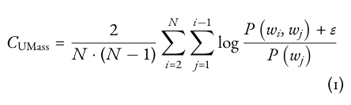
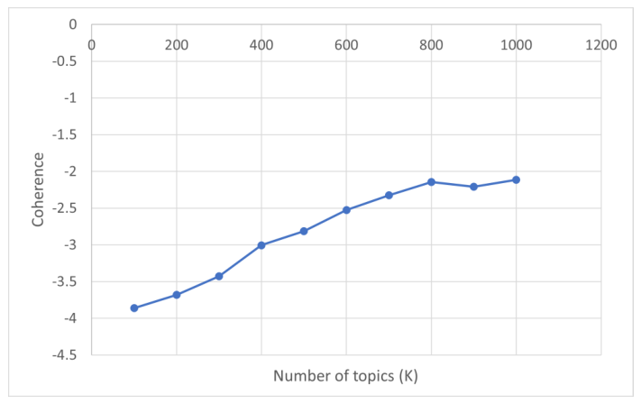

RAIL 2022Original text
Topic modelling to support English text selection for translation into South Africa's other official languages
This is the original text of the paper. Translations are linked above.
Proceedings of the 3rd Workshop on Resources for African Indigenous Languages (RAIL 2022), Journal of the Digital Humanities Association of Southern Africa.
Original text, shown under its licence (CC BY-SA 4.0). Reuse allowed with attribution; share adaptations alike. The translations on this site are by Ernst van Gassen (Arktos AI Lab).
Plain text for reuse, with its licence: English · LICENSE
Affiliations
Mazarura, Jocelyn
Department of Statistics, University of Pretoria
de Wet, Febe
Department of Electrical and Electronic Engineering, Stellenbosch University & School of Electrical
Electronic and Computer Engineering, North-West
University
E-mail addresses removed for privacy. They are in the original PDF.
Abstract
Appropriate training data is a prerequisite for the development of natural language processing (NLP) techniques. Vast amounts of language data are typically required to develop NLP tools that perform at state-of-the-art level. Such abundant resources are currently only available in a few languages. The remaining languages have to find alternative ways to become "NLP-enabled". The aim of the study reported on here is to make more language data available to support NLP development in the official languages of South Africa. In this paper we present the idea of generating text data by means of translation. We also propose the use of topic modelling to identify text in a highly resourced source language that will yield meaningful translations in under-resourced target languages. More specifically, the paper describes how topic modelling was used to identify English Wikipedia articles that should be suitable for translation into South Africa's 10 other official languages.
Keywords
DHASA, topic modelling, text selection, translation, under-resourced languages
1 Introduction
The resources required to implement state-of-the art performance in natural language processing (NLP) applications like text generation, question answering, automatic speech recognition, etc. are currently only available in a few well-resourced languages. The other 6 000-odd languages that are spoken in the world today have to find alternative ways to prepare themselves for a digital future society in which the ability to process language and speech automatically will be a prerequisite for participation. Applications like search engines and chat bots are developed using text data while others, like automatic dictation systems, require both text and speech data to be implemented. The current study is specifically aimed at developing text resources that are suitable for language modelling in South Africa's official languages.
A number of text resources have been developed during previous projects and are available in the resource catalogue of the South African Centre for Digital Language Resources (SADiLaR[1]). However, the extent of the existing text corpora is not adequate to implement large vocabulary automatic speech recognition (ASR). Moreover, the most extensive text resource that is available in all the official languages, the NCHLT Text Corpora (Eiselen & Puttkammer 2014), was derived from documents published on the South African government website domain (*.gov.za). As a result, the vocabulary and language usage is domain specific. The aim of the current work is to develop new text resources that can be used in addition to or in combination with existing corpora. The new data should ideally represent a diversity of domains and should contribute to expanding existing lexica.
One obvious and potentially rich source of text data is the world wide web. While many languages have at least some presence on the web, there are also many which are not represented on the internet at all. However, the fact that a language is present on the web does not guarantee that the available data is suitable for NLP research. Web-text is also not by default of good quality. In addition, some internet texts are extremely domain specific. Especially for under-resourced languages, online texts tend to be restricted to religious publications or government documents.
A strategy that has been proposed to strengthen the internet presence of under-represented languages is to create text by, for instance, encouraging first language speakers to write Wikipedia articles (Pretorius & Wolff 2020). The approach has been successful in some instances and have resulted in the first ever contributions to Wikipedia in many languages. Despite the advantage of producing "native" text, this is a slow process and has, to date, not yielded the amount of text data required by the datahungry deep learning methods that are currently widely used in the field of NLP.
This paper proposes large scale translation as an alternative to text generation[2]. Despite the differences between real and translated text, translations could bridge the gap between having almost no data available at all and having just enough data to bootstrap semi-supervised systems that can contribute to developing further resources. Proposing translation as a means to generate text in an under-resourced language also means deciding on what should be translated. Many of the obvious answers to this question, e.g. the 100 most popular Mandarin Wikipedia articles, would not necessarily yield meaningful text in other languages. The research reported on in this paper represents an attempt to find a systematic way of identifying text that is suitable for translation and that would yield meaningful text in the target languages. More specifically, we describe how English Wikipedia articles that should be suitable for translation into South Africa's 10 other official languages were identified.
2 Background
Previous attempts to translate NLP tasks and data sets from highly resourced to under-resourced languages have encountered various challenges related to the differences between the source and target languages. For instance, during the development of the African Wordnet, it was found that many concepts in existing Wordnets were not lexicalised in South African languages (Griesel & Bosch 2020). This difference was overcome by using the SIL Comparative African Wordlist (SILCAWL) introduced by Snider & Roberts (2004) as a guideline to add new synsets to the African Wordnet. This list consists of a vast selection of words relating to various things, such as body parts, emotions and stages of life in English and French. The content of the entries in the list is - to a large extent - lexicalised in South Africa's official languages. Using the SILCAWL as a point of departure has the additional advantage that it does not perpetuate culturally and cognitively biased language resources.
Another example of an NLP resource that was created by translation is the FLORES dataset, a multilingual resource that was compiled to enable bench-marking in low-resource and multilingual machine translation (Goyal et al. 2022). The dataset consists of 3001 sentences translated into - at the time of writing - 200 languages, but this number is continuously expanding. Afikaans, Sepedi, SiSwati, Xitsonga, Setswana, isiXhosa and isiZulu are already included in the FLORES set. A translation into Sesotho will be released soon, followed by isiNdebele and Tshivenda.
The FLORES sentences were selected from 842 English Wikipedia articles. Articles were chosen to represent a wide range of topics including crime, disasters, entertainment, geography, health, nature, politics, science, sports, and travel. One might argue that more translations should be generated by expanding the existing list of articles with more articles on the same or similar topics. However, topics were assigned manually to the sentences in the FLORES collection which means that expanding on or repeating the process is not possible. Moreover, further inspection of the FLORES dataset revealed that the source domains, Wikinews, Wikijunior and WikiVoyage, contain many articles that may not always be relevant in the African context and which would probably give rise to the same lexicalistion issues that were encountered during the African Wordnet project.
The No Language Left Behind Seed Data (NLLB-Seed) was created in a similar manner as the FLORES data and comprises a set of professionally translated Wikipedia sentences (NLLB Team et al. 2022). However, in contrast to the FLORES data, the NLLB-Seed sentences were taken from Wikimedia's so-called "list of articles every Wikipedia should have". The list includes topics in different fields of knowledge and human activity, similar to those in the SILCAWL. The NLLB-Seed data currently consists of around six thousand sentences in 39 languages. Although the list could be a good point of departure for an extensive translation effort, it is not currently foreseen that the list will expand over time. In contrast, the topic modelling method proposed here could generate any number of sentences and could even be repeated if required.
The remainder of this paper is structured as follows. Section 3 provides an overview of topic modelling and Section 4 explains how models are evaluated. Section 5 describes how data was selected to create a Wikipedia topic model related to the SILCAWL. The results of the investigation are presented in Section 6, followed by a discussion in Section 7.
3 Topic modelling
Topic modelling is a text mining technique used to uncover latent topics in large collections of documents. Most topic models are unsupervised, thus making them powerful tools in addressing real-world problems as data is typically unlabelled in practice. Topic models have found use in many applications, including sentiment analysis (Rana et al. 2016), text classification, document categorisation, summarisation, etc. (Boyd-Graber et al. 2017).
Latent Dirichlet Allocation (LDA) is one of the most popular topic models (Blei et al. 2003). It is a three-level hierarchical Bayesian model, in which each document is modelled as a finite mixture over a set of latent topics, where a topic is defined as a distribution over the words of the vocabulary. LDA is a generative probabilistic model as it models the assumption that each document is formed through the following generative process:
- Assuming that the corpus contains K topics, randomly choose K topic distributions, ϕk.
- For each of the M documents in the corpus, randomly select a distribution over topics, θm.
- Assume that each document contains nm words. For each word, wmn, in the m th document.
- a. Randomly choose a topic, from the distribution over topics from Step 2, where zmn denotes an indicator of the selected topic.
- b. Randomly choose a word from the selected topic based on its distribution from Step 1.
This generative process can be summarised graphically as in Figure 1.
LDA can be easily applied to any dataset using the gensim[3] package in Python. The main outputs of interest are typically the topics and topic distributions of each document. Gensim also has the capability to identify topic distributions in unseen documents, which is a feature that is useful for classifying new documents.
4 Model evaluation
By virtue of being unsupervised, evaluating topic models is a challenging task. Although some authors use perplexity[4] or held-out likelihood as measures of topic model performance, it has been shown that such intrinsic measures of model performance do not correlate with human understanding of topics (Chang et al. 2009). In other words, models with better perplexity scores often produce less humanly interpretable topics, which defeats the exploratory goals of topic modelling. In light of this, coherence measures have become more popular. In this research, we make use of the well-known UMass coherence measure as it has been shown to align well with human evaluations of coherence (Mimno et al. 2011). Considering the top N words in a topic, the UMass coherence for a topic is calculated in gensim as in Equation 1.

Figure 1: Graphical model for LDA. The shaded circles are used to represent observed variables, whilst unshaded circles represent unobserved variables. The arrows represent dependencies between variables and rectangles indicate replicated structures. α and β denote hyperparameters.

P (wj ) denotes the probability of word wj occurring in the training set of documents. P (wi, wj ) denotes the probability of words wi and wj occurring together in the training set and ε denotes a smoothing parameter. The overall coherence for a topic model is then taken as the average of all the topic coherences. In general, a higher coherence score is desired as it indicates better topic coherence.
5 Document selection process
The objective of this research is to create a collection of sentences that can be used for NLP research in under-resourced languages, in a manner that is both methodological and systematic. To this end, we propose using topic modelling as a selection method. This section provides the details of the selection process.
5.1 Topic model training
Given the aim of our research, we sought to create a data set that is generally relevant and not domain specific by selecting sentences from Wikipedia articles. To this end, we first created a training set, based on articles from various general topics. These general topics were taken from the SILCAWL comparative word list introduced in Section 2. The English words in the list were used as search terms in Wikipedia and the associated articles were retrieved from the web. After cleaning the data and removing any potentially offensive words, the resulting corpus contained 1 698 documents with an average of 1 132 words per document.
A topic model was then trained on this data using gensim. The hyperparameters were learned from the data, but the model was run for different numbers of topics, K = {100,200, ..., 1000}. The average coherence score for each model is shown in Figure 2. It can be seen that the coherence does not increase significantly beyond K = 800, thus K = 800 was chosen to be the ideal number of topics for the training data.
Table 1 shows the top 25 topics from K = 800 arranged in order of decreasing coherence. It is evident from the table that the topic model was able to pick up various topics including, for example, poverty (topic 98), health (topic 224) and time (topic 551). Note that the choice of overall topic names are determined by the user and thus are subjective. The full set of topics can be found at https://github.com/jrmazarura/wikipedia-sentence-selection.
Table 1: Top 25 topics from training set.


Figure 2: Average coherence score for K = {100,200, ..., 1000}.
5.2 Document selection using trained topic model
The next step in the document selection process was to use the trained topic model to select articles from Wikipedia and then select sentences from them. For each article in Wikipedia, the model was used to determine the topic distribution and only articles satisfying the following conditions were retained:
- The dominant topic of the article had to be amongst the 500 topics with the highest coherence scores from the trained model.
- The dominant topic needed to make up at least a quarter of the article's topic distribution.
The 500 topic cutoff used in #1 was selected by assessing the coherence scores. Based on inspection, the interpretability of the topics appeared to noticeably deteriorate as the coherence scores decreased below -2. The first 500 topics had coherence scores above this value. In addition, the 500-topic cutoff also ensured that a broad variety of topics were covered. Choosing The 25% cutoff used in #2 not only ensured that the topic made up a significant proportion of the article's topic, but it was also necessary to ensure that only some of the articles from Wikipedia were selected.
After this step, the final collection of sentences was compiled by randomly selecting an equal number of articles from each topic and then randomly selecting one sentence from each article. For example, to create a collection of 5 000 sentences, 10 articles belonging to each of the 500 topics were randomly selected and one sentence was randomly selected from each of the articles. Only sentences with at least 15 words made up of 3 characters or more were selected. This was done to avoid retrieving sentences that were very short and did not contain much information.
6 Results
The final selection of sentences can be found at https://github.com/jrmazarura/wikipedia-sentence-selection. Table 2 shows a snippet of the sentences selected by the proposed method. From the table, it is evident that many topics do not appear to be related to the South African or even African context as desired. In selecting the articles with dominant topics belonging to our top 500 topics, it can be seen that many of the sentences are about seemingly unrelated topics.
For example, consider Topic 218 in Table 1. This topic appears to be related to ocean caves. The trained topic model was used to retrieve related articles from Wikipedia and the titles of the articles were recorded (the list of titles is also available on GitHub). Some of the Wikipedia articles retrieved have titles such as Cave, Stalactite and Stalagmite. However, there are much more which seem less important in our context, such as Velebit caves (caves in Croatia), Abrakurrie Cave (caves in Australia) and Ogof Agen Allwedd (caves in Wales) amongst many others. The topic model was able to select 482 cave-related articles, but unfortunately, most of them are about specific caves from all over the world. Ultimately, this means that sampling random sentences from these randomly selected articles will most likely produce sentences that are unrelated to South Africa. The following are examples of some of the cave-related sentences that were selected:
"The Bull Thistle Cave Archaeological Site is an archaeological site on the National Register of Historic Places, located in Tazewell County, Virginia."
"The Caves of Hotton are speleothem caves located in Wallonia near Hotton in Belgium, which were discovered in 1958 and are around 5 or 6 km long and 70 metres deep."
This observation is likely due to the topic model trying to find topic distributions for over five million articles over only 800 topics. It is reasonable to assume that such a large corpus is likely to contain much more than 800 topics. In addition, topics such as the cave topic that was considered as an example, are likely to have many related subtopics, e.g. African caves or ice caves, etc. If there is only one topic related to caves, then all articles will be grouped into one topic creating a collection of many cave-related articles covering a broad scope.
7 Discussion & future work
Our first attempt at using topic modelling to identify Wikipedia articles that would be suitable for translation from English into the 10 other South African languages yielded an extremely diverse set of sentences, many of which contain words that are probably not lexicalised in any of the target languages. Training the topic models on the SILCAWL was clearly not adequate to avoid this challenge.
In the next phase of the research we will aim to find pruning criteria that could be used to "focus" the topic models on content that is more relevant to the South African context. We would also like to establish a relationship between the selected text and the resulting translation in the target language to ensure that both relevant and translatable text has been chosen. Such a measure will also allow a comparison between the proposed topic model approach to text selection and a fully random baseline.
Notes
- [1] https://repo.sadilar.org/
- [2] In this paper text generation only refers to text produced by humans. Automatic text generation will not be considered because the technique itself relies on the availability of text data, a resource that is not available in the circumstances relevant to this study.
- [3] https://radimrehurek.com/gensim/auto_examples/index.html
- [4] Perplexitiy measures a model's ability to predict new data. A low perplexity score is assumed to indicate good model performance.
Table 2: Selected sentences from Wikipedia

Acknowledgements
The localisation of the Mozilla Common Voice platform in South Africa is supported by the German Federal Ministry of Economic Cooperation and Development (BMZ), represented by the GIZ project FAIR Forward - Artificial Intelligence for All.
References
Blei, D. M., Ng, A. Y. & Jordan, M. I. (2003), 'Latent dirichlet allocation', Journal of machine Learning research 3(Jan), 993-1022.
Boyd-Graber, J., Hu, Y., Mimno, D. et al. (2017), 'Applications of topic models', Foundations and Trends® in Information Retrieval 11(2-3), 143-296.
Chang, J., Gerrish, S., Wang, C., Boyd-Graber, J. & Blei, D. (2009), 'Reading tea leaves: How humans interpret topic models', Advances in neural information processing systems 22.
Eiselen, R. & Puttkammer, M. (2014), Developing text resources for ten South African languages, in 'Proceedings of the Ninth International Conference on Language Resources and Evaluation (LREC'14)', European Language Resources Association (ELRA), Reykjavik, Iceland, pp. 3698-3703. URL: http://www.lrec-conf.org/proceedings/lrec2014/pdf/1151 Paper.pdf
Goyal, N., Gao, C., Chaudhary, V., Chen, P.-J., Wenzek, G., Ju, D., Krishnan, S., Ranzato, M., Guzman, F. & Fan, A. (2022), 'The FLORES-101 evaluation benchmark for low-resource and multilingual machine translation', Transactions of the Association for Computational Linguistics 10,522-538.
Griesel, M. & Bosch, S. (2020), Navigating challenges of multilingual resource development for under-resourced languages: The case of the African wordnet project, in 'Proceedings of the first workshop on Resources for African Indigenous Languages', pp. 45-50.
Mimno, D., Wallach, H., Talley, E., Leenders, M. & McCallum, A. (2011), Optimizing semantic coherence in topic models, in 'Proceedings of the 2011 conference on empirical methods in natural language processing', pp. 262-272.
NLLB Team, Costa-jussà, M. R., Cross, J., Çelebi, O., Elbayad, M., Heafield, K., Heffernan, K., Kalbassi, E., Lam, J., Licht, D., Maillard, J., Sun, A., Wang, S., Wenzek, G., Youngblood, A., Akula, B., Barrault, L., Gonzalez, G. M., Hansanti, P., Hoffman, J., Jarrett, S., Sadagopan, K. R., Rowe, D., Spruit, S., Tran, C., Andrews, P., Ayan, N. F., Bhosale, S., Edunov, S., Fan, A., Gao, C., Goswami, V., Guzmán, F., Koehn, P., Mourachko, A., Ropers, C., Saleem, S., Schwenk, H. & Wang, J. (2022), 'No language left behind: Scaling human-centered machine translation'.
Pretorius, L. & Wolff, F. (2020), Wikipedia as a Transformative Multilingual Knowledge Resource, Cambridge University Press, p. 232-246.
Rana, T. A., Cheah, Y.-N. & Letchmunan, S. (2016), 'Topic modeling in sentiment analysis: A systematic review.', Journal of ICT Research & Applications 10(1).
Snider, K. & Roberts, J. (2004), 'SIL comparative African wordlist (SILCAWL)', Journal of West African Languages 31(2), 73-122.
Topic modelling to support English text selection for translation into South Africa's other official languages
Modélisation thématique pour soutenir la sélection du texte anglais pour la traduction dans les autres langues officielles de l'Afrique du Sud
Affiliations
Mazarura, Jocelyn
Department of Statistics, University of Pretoria
de Wet, Febe
Department of Electrical and Electronic Engineering, Stellenbosch University & School of Electrical,
Electronic and Computer Engineering, North-West
University
Affiliations
Mazarura, Jocelyn
Department of Statistics, University of Pretoria
de Wet, Febe
Department of Electrical and Electronic Engineering, Stellenbosch University & School of Electrical,
Electronic and Computer Engineering, North-West
University
Abstract
Résumé
Appropriate training data is a prerequisite for the development of natural language processing (NLP) techniques. Vast amounts of language data are typically required to develop NLP tools that perform at state-of-the-art level. Such abundant resources are currently only available in a few languages. The remaining languages have to find alternative ways to become "NLP-enabled". The aim of the study reported on here is to make more language data available to support NLP development in the official languages of South Africa. In this paper we present the idea of generating text data by means of translation. We also propose the use of topic modelling to identify text in a highly resourced source language that will yield meaningful translations in under-resourced target languages. More specifically, the paper describes how topic modelling was used to identify English Wikipedia articles that should be suitable for translation into South Africa's 10 other official languages.
Des données d'entraînement appropriées sont une condition préalable au développement de techniques de traitement du langage naturel (TLN). De vastes quantités de données langagières sont généralement nécessaires pour développer des outils de TAL qui atteignent un niveau de performance à l'état de l'art. De telles ressources abondantes ne sont actuellement disponibles que dans quelques langues. Les langues restantes doivent trouver des moyens alternatifs pour devenir « dotées de TAL ». L'objectif de l'étude présentée ici est de rendre davantage de données langagières disponibles pour soutenir le développement du TAL dans les langues officielles d'Afrique du Sud. Dans cet article, nous présentons l'idée de générer des données textuelles au moyen de la traduction. Nous proposons également l'utilisation de la modélisation thématique pour identifier le texte dans une langue source très dotée en ressources qui produira des traductions significatives dans des langues cibles sous-dotées. Plus précisément, l'article décrit comment la modélisation thématique a été utilisée pour identifier les articles de Wikipédia en anglais qui devraient se prêter à la traduction dans les 10 autres langues officielles de l'Afrique du Sud.
Keywords
Mots-clés
DHASA, topic modelling, text selection, translation, under-resourced languages
DHASA, modélisation thématique, sélection de textes, traduction, langues sous-dotées
1 Introduction
1 Introduction
The resources required to implement state-of-the art performance in natural language processing (NLP) applications like text generation, question answering, automatic speech recognition, etc. are currently only available in a few well-resourced languages. The other 6 000-odd languages that are spoken in the world today have to find alternative ways to prepare themselves for a digital future society in which the ability to process language and speech automatically will be a prerequisite for participation. Applications like search engines and chat bots are developed using text data while others, like automatic dictation systems, require both text and speech data to be implemented. The current study is specifically aimed at developing text resources that are suitable for language modelling in South Africa's official languages.
Les ressources nécessaires pour atteindre des performances à l'état de l'art dans les applications de traitement automatique des langues (TAL) comme la génération automatique de texte, les systèmes de questions-réponses, la reconnaissance automatique de la parole, etc. ne sont actuellement disponibles que dans quelques langues bien dotées. Les quelque 6 000 autres langues parlées dans le monde aujourd'hui doivent trouver des moyens alternatifs pour se préparer à une société future numérique dans laquelle la capacité à traiter automatiquement le langage et la parole sera un prérequis pour la participation. Des applications comme les moteurs de recherche et les robots conversationnels sont développées à partir de données textuelles, tandis que d'autres, comme les systèmes de dictée automatique, nécessitent à la fois des données textuelles et des données de parole pour être mises en œuvre. L'étude actuelle vise spécifiquement à développer des ressources textuelles adaptées à la modélisation linguistique dans les langues officielles d'Afrique du Sud.
A number of text resources have been developed during previous projects and are available in the resource catalogue of the South African Centre for Digital Language Resources (SADiLaR[1]). However, the extent of the existing text corpora is not adequate to implement large vocabulary automatic speech recognition (ASR). Moreover, the most extensive text resource that is available in all the official languages, the NCHLT Text Corpora (Eiselen & Puttkammer 2014), was derived from documents published on the South African government website domain (*.gov.za). As a result, the vocabulary and language usage is domain specific. The aim of the current work is to develop new text resources that can be used in addition to or in combination with existing corpora. The new data should ideally represent a diversity of domains and should contribute to expanding existing lexica.
Un certain nombre de ressources textuelles ont été développées au cours de projets précédents et sont disponibles dans le catalogue de ressources du Centre sud-africain des ressources linguistiques numériques (SADiLaR[1]). Cependant, l'ampleur des corpus textuels existants n'est pas suffisante pour mettre en œuvre une reconnaissance automatique de la parole (ASR) à grand vocabulaire. De plus, la ressource textuelle la plus étendue disponible dans toutes les langues officielles, les NCHLT Text Corpora (Eiselen & Puttkammer 2014), a été dérivée de documents publiés sur le domaine du site web du gouvernement sud-africain (*.gov.za). En conséquence, le vocabulaire et l'utilisation de la langue sont spécifiques au domaine. L'objectif du travail actuel est de développer de nouvelles ressources textuelles qui peuvent être utilisées en plus ou en combinaison avec les corpus existants. Les nouvelles données devraient idéalement représenter une diversité de domaines et contribuer à l'expansion des lexiques existants.
One obvious and potentially rich source of text data is the world wide web. While many languages have at least some presence on the web, there are also many which are not represented on the internet at all. However, the fact that a language is present on the web does not guarantee that the available data is suitable for NLP research. Web-text is also not by default of good quality. In addition, some internet texts are extremely domain specific. Especially for under-resourced languages, online texts tend to be restricted to religious publications or government documents.
Une source évidente et potentiellement riche de données textuelles est le World Wide Web. Alors que de nombreuses langues ont au moins une certaine présence sur le Web, il y en a aussi beaucoup qui ne sont pas du tout représentées sur Internet. Cependant, le fait qu'une langue soit présente sur le web ne garantit pas que les données disponibles soient adaptées à la recherche en TAL. Le web-texte n'est pas non plus par défaut de bonne qualité. En outre, certains textes sur Internet sont extrêmement spécifiques à un domaine. Surtout pour les langues sous-dotées, les textes en ligne tendent à être limités aux publications religieuses ou aux documents gouvernementaux.
A strategy that has been proposed to strengthen the internet presence of under-represented languages is to create text by, for instance, encouraging first language speakers to write Wikipedia articles (Pretorius & Wolff 2020). The approach has been successful in some instances and have resulted in the first ever contributions to Wikipedia in many languages. Despite the advantage of producing "native" text, this is a slow process and has, to date, not yielded the amount of text data required by the datahungry deep learning methods that are currently widely used in the field of NLP.
Une stratégie qui a été proposée pour renforcer la présence sur Internet des langues sous-représentées consiste à créer du texte en encourageant, par exemple, les locuteurs de langue maternelle à écrire des articles sur Wikipédia (Pretorius & Wolff 2020). L'approche a été couronnée de succès dans certains cas et a abouti aux premières contributions à Wikipedia dans de nombreuses langues. Malgré l'avantage de produire un texte « natif », il s'agit d'un processus lent qui, à ce jour, n'a pas produit la quantité de données textuelles requise par les méthodes d'apprentissage profond, gourmandes en données, actuellement largement utilisées dans le domaine du TAL.
This paper proposes large scale translation as an alternative to text generation[2]. Despite the differences between real and translated text, translations could bridge the gap between having almost no data available at all and having just enough data to bootstrap semi-supervised systems that can contribute to developing further resources. Proposing translation as a means to generate text in an under-resourced language also means deciding on what should be translated. Many of the obvious answers to this question, e.g. the 100 most popular Mandarin Wikipedia articles, would not necessarily yield meaningful text in other languages. The research reported on in this paper represents an attempt to find a systematic way of identifying text that is suitable for translation and that would yield meaningful text in the target languages. More specifically, we describe how English Wikipedia articles that should be suitable for translation into South Africa's 10 other official languages were identified.
Cet article propose la traduction à grande échelle comme alternative à la génération de texte[2]. Malgré les différences entre les textes réels et traduits, les traductions pourraient combler l'écart entre le fait d'avoir presque aucune donnée disponible et le fait d'avoir juste assez de données pour amorcer des systèmes semi-supervisés qui peuvent contribuer au développement de ressources supplémentaires. Proposer la traduction comme moyen de générer du texte dans une langue sous-dotée implique aussi de décider ce qui doit être traduit. Beaucoup de réponses évidentes à cette question, par exemple les 100 articles les plus populaires de Wikipédia en mandarin, ne donneraient pas nécessairement un texte significatif dans d'autres langues. La recherche présentée dans cet article représente une tentative de trouver une façon systématique d'identifier le texte qui convient à la traduction et qui produirait un texte significatif dans les langues cibles. Plus spécifiquement, nous décrivons comment les articles de l'encyclopédie Wikipédia en anglais qui devraient être adaptés à la traduction dans les 10 autres langues officielles d'Afrique du Sud ont été identifiés.
2 Background
2 Contexte
Previous attempts to translate NLP tasks and data sets from highly resourced to under-resourced languages have encountered various challenges related to the differences between the source and target languages. For instance, during the development of the African Wordnet, it was found that many concepts in existing Wordnets were not lexicalised in South African languages (Griesel & Bosch 2020). This difference was overcome by using the SIL Comparative African Wordlist (SILCAWL) introduced by Snider & Roberts (2004) as a guideline to add new synsets to the African Wordnet. This list consists of a vast selection of words relating to various things, such as body parts, emotions and stages of life in English and French. The content of the entries in the list is - to a large extent - lexicalised in South Africa's official languages. Using the SILCAWL as a point of departure has the additional advantage that it does not perpetuate culturally and cognitively biased language resources.
Les tentatives précédentes de traduire des tâches de TAL et des jeux de données de langues fortement dotées vers des langues sous-dotées ont rencontré divers défis liés aux différences entre la langue source et la langue cible. Par exemple, lors du développement du WordNet africain, il a été constaté que de nombreux concepts présents dans les WordNets existants n'étaient pas lexicalisés dans les langues sud-africaines (Griesel & Bosch 2020). Cette différence a été surmontée en utilisant la liste de mots africains comparatifs SIL (SILCAWL) introduite par Snider & Roberts (2004) comme guide pour ajouter de nouveaux synsets à l'African Wordnet. Cette liste se compose d'une vaste sélection de mots relatifs à diverses choses, telles que les parties du corps, les émotions et les étapes de la vie en anglais et en français. Le contenu des entrées de la liste est - dans une large mesure - lexicalisé dans les langues officielles de l'Afrique du Sud. Utiliser le SILCAWL comme point de départ présente l'avantage supplémentaire de ne pas perpétuer des ressources linguistiques biaisées culturellement et cognitivement.
Another example of an NLP resource that was created by translation is the FLORES dataset, a multilingual resource that was compiled to enable bench-marking in low-resource and multilingual machine translation (Goyal et al. 2022). The dataset consists of 3001 sentences translated into - at the time of writing - 200 languages, but this number is continuously expanding. Afikaans, Sepedi, SiSwati, Xitsonga, Setswana, isiXhosa and isiZulu are already included in the FLORES set. A translation into Sesotho will be released soon, followed by isiNdebele and Tshivenda.
Un autre exemple de ressource en TAL créée par traduction est le jeu de données FLORES, une ressource multilingue qui a été compilée pour permettre le bench-marking dans la traduction automatique en langues peu dotées et multilingue (Goyal et al. 2022). L'ensemble de données se compose de 3001 phrases traduites en - au moment de l'écriture - 200 langues, mais ce nombre ne cesse de croître. Afikaans, Sepedi, SiSwati, Xitsonga, Setswana, isiXhosa et isiZulu sont déjà inclus dans le set FLORES. Une traduction en sesotho sera bientôt publiée, suivie de l'isiNdebele et du tshivenda.
The FLORES sentences were selected from 842 English Wikipedia articles. Articles were chosen to represent a wide range of topics including crime, disasters, entertainment, geography, health, nature, politics, science, sports, and travel. One might argue that more translations should be generated by expanding the existing list of articles with more articles on the same or similar topics. However, topics were assigned manually to the sentences in the FLORES collection which means that expanding on or repeating the process is not possible. Moreover, further inspection of the FLORES dataset revealed that the source domains, Wikinews, Wikijunior and WikiVoyage, contain many articles that may not always be relevant in the African context and which would probably give rise to the same lexicalistion issues that were encountered during the African Wordnet project.
Les phrases FLORES ont été sélectionnées à partir de 842 articles de l'encyclopédie Wikipedia en anglais. Les articles ont été choisis pour représenter une large gamme de sujets, notamment le crime, les catastrophes, les divertissements, la géographie, la santé, la nature, la politique, la science, les sports et les voyages. On pourrait faire valoir que plus de traductions devraient être générées en élargissant la liste existante d'articles avec plus d'articles sur les mêmes sujets ou des sujets similaires. Cependant, les sujets ont été attribués manuellement aux phrases de la collection FLORES, ce qui signifie que l'élargissement ou la répétition du processus n'est pas possible. En outre, une inspection plus poussée de l'ensemble de données FLORES a révélé que les domaines sources, Wikinews, Wikijunior et WikiVoyage, contiennent de nombreux articles qui ne sont peut-être pas toujours pertinents dans le contexte africain et qui donneraient probablement lieu aux mêmes problèmes de lexicalisation que ceux rencontrés lors du projet African Wordnet.
The No Language Left Behind Seed Data (NLLB-Seed) was created in a similar manner as the FLORES data and comprises a set of professionally translated Wikipedia sentences (NLLB Team et al. 2022). However, in contrast to the FLORES data, the NLLB-Seed sentences were taken from Wikimedia's so-called "list of articles every Wikipedia should have". The list includes topics in different fields of knowledge and human activity, similar to those in the SILCAWL. The NLLB-Seed data currently consists of around six thousand sentences in 39 languages. Although the list could be a good point of departure for an extensive translation effort, it is not currently foreseen that the list will expand over time. In contrast, the topic modelling method proposed here could generate any number of sentences and could even be repeated if required.
Le jeu de données No Language Left Behind Seed Data (NLLB-Seed) a été créé de manière similaire aux données FLORES et comprend un ensemble de phrases de Wikipédia traduites professionnellement (NLLB Team et al. 2022). Cependant, contrairement aux données FLORES, les phrases NLLB-Seed ont été tirées de la soi-disant « liste d'articles que chaque Wikipédia devrait avoir » de Wikimedia. La liste comprend des sujets dans différents domaines de la connaissance et de l'activité humaine, similaires à ceux du SILCAWL. Les données de la NLLB-Seed se composent actuellement d'environ six mille phrases dans 39 langues. Bien que la liste puisse constituer un bon point de départ pour un vaste effort de traduction, il n'est pas prévu à l'heure actuelle qu'elle s'élargisse au fil du temps. En revanche, la méthode de modélisation thématique proposée ici pourrait générer n'importe quel nombre de phrases et pourrait même être répétée si nécessaire.
The remainder of this paper is structured as follows. Section 3 provides an overview of topic modelling and Section 4 explains how models are evaluated. Section 5 describes how data was selected to create a Wikipedia topic model related to the SILCAWL. The results of the investigation are presented in Section 6, followed by a discussion in Section 7.
Le reste du présent document est structuré comme suit. La section 3 donne un aperçu de la modélisation thématique et la section 4 explique comment les modèles sont évalués. La section 5 décrit comment les données ont été sélectionnées pour créer un modèle de sujet Wikipédia lié au SILCAWL. Les résultats de l'enquête sont présentés dans la section 6, suivis d'une discussion dans la section 7.
3 Topic modelling
3 Modélisation thématique
Topic modelling is a text mining technique used to uncover latent topics in large collections of documents. Most topic models are unsupervised, thus making them powerful tools in addressing real-world problems as data is typically unlabelled in practice. Topic models have found use in many applications, including sentiment analysis (Rana et al. 2016), text classification, document categorisation, summarisation, etc. (Boyd-Graber et al. 2017).
La modélisation thématique est une technique d'exploration de texte utilisée pour découvrir des thèmes latents dans de grandes collections de documents. La plupart des modèles de sujets sont non supervisés, ce qui en fait des outils puissants pour traiter des problèmes du monde réel, car les données sont généralement non étiquetées en pratique. Les modèles de sujets ont trouvé des applications dans de nombreux domaines, notamment l'analyse des sentiments (Rana et al. 2016), la classification de texte, la catégorisation de documents, la synthèse, etc. (Boyd-Graber et al. 2017).
Latent Dirichlet Allocation (LDA) is one of the most popular topic models (Blei et al. 2003). It is a three-level hierarchical Bayesian model, in which each document is modelled as a finite mixture over a set of latent topics, where a topic is defined as a distribution over the words of the vocabulary. LDA is a generative probabilistic model as it models the assumption that each document is formed through the following generative process:
L'allocation de Dirichlet latente (LDA) est l'un des modèles de sujets les plus populaires (Blei et al. 2003). Il s'agit d'un modèle bayésien hiérarchique à trois niveaux, dans lequel chaque document est modélisé comme un mélange fini sur un ensemble de sujets latents, où un sujet est défini comme une distribution sur les mots du vocabulaire. LDA est un modèle probabiliste génératif car il modélise l'hypothèse que chaque document est formé par le processus génératif suivant:
Assuming that the corpus contains K topics, randomly choose K topic distributions, ϕk.
En supposant que le corpus contient K sujets, choisissez aléatoirement K distributions de sujets, ϕk.
For each of the M documents in the corpus, randomly select a distribution over topics, θm.
Pour chacun des M documents du corpus, sélectionnez aléatoirement une distribution sur les sujets, θm.
Assume that each document contains nm words. For each word, wmn, in the m th document.
Supposons que chaque document contient nm mots. Pour chaque mot, wmn, dans le m ème document.
a. Randomly choose a topic, from the distribution over topics from Step 2, where zmn denotes an indicator of the selected topic.
a. Choisissez au hasard un sujet, à partir de la distribution sur les sujets de l'étape 2, où zmn désigne un indicateur du sujet sélectionné.
b. Randomly choose a word from the selected topic based on its distribution from Step 1.
b. Choisissez au hasard un mot du sujet sélectionné en fonction de sa distribution à partir de l'étape 1.
This generative process can be summarised graphically as in Figure 1.
Ce processus génératif peut être résumé graphiquement comme dans la figure 1.
LDA can be easily applied to any dataset using the gensim[3] package in Python. The main outputs of interest are typically the topics and topic distributions of each document. Gensim also has the capability to identify topic distributions in unseen documents, which is a feature that is useful for classifying new documents.
LDA peut être facilement appliquée à tout ensemble de données en utilisant le package gensim[3] en Python. Les principaux extrants d'intérêt sont généralement les sujets et les distributions de sujets de chaque document. Gensim dispose également de la capacité d'identifier les distributions de sujets dans des documents non vus, une fonctionnalité utile pour classer de nouveaux documents.
4 Model evaluation
4 Évaluation du modèle
By virtue of being unsupervised, evaluating topic models is a challenging task. Although some authors use perplexity[4] or held-out likelihood as measures of topic model performance, it has been shown that such intrinsic measures of model performance do not correlate with human understanding of topics (Chang et al. 2009). In other words, models with better perplexity scores often produce less humanly interpretable topics, which defeats the exploratory goals of topic modelling. In light of this, coherence measures have become more popular. In this research, we make use of the well-known UMass coherence measure as it has been shown to align well with human evaluations of coherence (Mimno et al. 2011). Considering the top N words in a topic, the UMass coherence for a topic is calculated in gensim as in Equation 1.
En raison de leur caractère non supervisé, l'évaluation des modèles de sujets est une tâche difficile. Bien que certains auteurs utilisent la perplexité[4] ou la vraisemblance sur des données mises de côté comme mesures de la performance des modèles de sujets, il a été démontré que de telles mesures intrinsèques de la performance du modèle ne corrèlent pas avec la compréhension humaine des sujets (Chang et al. 2009). En d'autres termes, les modèles avec de meilleurs scores de perplexité produisent souvent des thèmes moins interprétables humainement, ce qui va à l'encontre des objectifs exploratoires de la modélisation thématique. À la lumière de cela, les mesures de cohérence sont devenues plus populaires. Dans cette recherche, nous utilisons la mesure de cohérence bien connue de UMass, car elle s'est avérée bien alignée avec les évaluations humaines de la cohérence (Mimno et al. 2011). En considérant les N premiers mots d'un sujet, la cohérence UMass pour un sujet est calculée dans gensim comme dans l'équation 1.
Figure 1: Graphical model for LDA. The shaded circles are used to represent observed variables, whilst unshaded circles represent unobserved variables. The arrows represent dependencies between variables and rectangles indicate replicated structures. α and β denote hyperparameters.
Figure 1 : Modèle graphique pour LDA. Les cercles ombrés sont utilisés pour représenter les variables observées, tandis que les cercles non ombrés représentent les variables non observées. Les flèches représentent les dépendances entre les variables et les rectangles indiquent les structures répliquées. α et β désignent les hyperparamètres.
P (wj ) denotes the probability of word wj occurring in the training set of documents. P (wi, wj ) denotes the probability of words wi and wj occurring together in the training set and ε denotes a smoothing parameter. The overall coherence for a topic model is then taken as the average of all the topic coherences. In general, a higher coherence score is desired as it indicates better topic coherence.
P (wj ) désigne la probabilité que le mot wj se produise dans l'ensemble des documents d'apprentissage. P (wi, wj ) désigne la probabilité que les mots wi et wj apparaissent ensemble dans l'ensemble d'entraînement et ε désigne un paramètre de lissage. La cohérence globale pour un modèle de sujet est ensuite prise comme la moyenne de toutes les cohérences de sujet. En général, une note de cohérence plus élevée est souhaitée car elle indique une meilleure cohérence des sujets.
5 Document selection process
5 Processus de sélection de documents
The objective of this research is to create a collection of sentences that can be used for NLP research in under-resourced languages, in a manner that is both methodological and systematic. To this end, we propose using topic modelling as a selection method. This section provides the details of the selection process.
L'objectif de cette recherche est de créer une collection de phrases pouvant être utilisées pour la recherche en TAL pour les langues sous-dotées, de manière à la fois méthodique et systématique. À cette fin, nous proposons d'utiliser la modélisation thématique comme méthode de sélection. Cette section fournit les détails du processus de sélection.
5.1 Topic model training
5.1 Entraînement au modèle thématique
Given the aim of our research, we sought to create a data set that is generally relevant and not domain specific by selecting sentences from Wikipedia articles. To this end, we first created a training set, based on articles from various general topics. These general topics were taken from the SILCAWL comparative word list introduced in Section 2. The English words in the list were used as search terms in Wikipedia and the associated articles were retrieved from the web. After cleaning the data and removing any potentially offensive words, the resulting corpus contained 1 698 documents with an average of 1 132 words per document.
Compte tenu de l'objectif de notre recherche, nous avons cherché à créer un ensemble de données qui est généralement pertinent et non spécifique au domaine en sélectionnant des phrases d'articles de Wikipédia. À cette fin, nous avons d'abord créé un ensemble d'entraînement, basé sur des articles de divers sujets généraux. Ces thèmes généraux ont été tirés de la liste de mots comparatifs du SILCAWL présentée à la section 2. Les mots anglais de la liste ont été utilisés comme termes de recherche dans Wikipedia et les articles associés ont été récupérés sur le web. Après avoir nettoyé les données et supprimé les mots potentiellement offensants, le corpus obtenu contenait 1 698 documents avec une moyenne de 1 132 mots par document.
A topic model was then trained on this data using gensim. The hyperparameters were learned from the data, but the model was run for different numbers of topics, K = {100,200, ..., 1000}. The average coherence score for each model is shown in Figure 2. It can be seen that the coherence does not increase significantly beyond K = 800, thus K = 800 was chosen to be the ideal number of topics for the training data.
Un modèle thématique a ensuite été entraîné sur ces données à l'aide de gensim. Les hyperparamètres ont été appris à partir des données, mais le modèle a été exécuté pour différents nombres de sujets, K = {100,200, ..., 1000}. La moyenne des scores de cohérence pour chaque modèle est présentée dans la Figure 2. On peut voir que la cohérence n'augmente pas significativement au-delà de K = 800, ainsi K = 800 a été choisi comme le nombre idéal de sujets pour les données d'entraînement.
Table 1 shows the top 25 topics from K = 800 arranged in order of decreasing coherence. It is evident from the table that the topic model was able to pick up various topics including, for example, poverty (topic 98), health (topic 224) and time (topic 551). Note that the choice of overall topic names are determined by the user and thus are subjective. The full set of topics can be found at https://github.com/jrmazarura/wikipedia-sentence-selection.
Le tableau 1 montre les 25 sujets principaux issus de K = 800 classés par ordre de cohérence décroissante. Il ressort clairement du tableau que le modèle thématique a permis d'aborder divers sujets, notamment la pauvreté (thème 98), la santé (thème 224) et le temps (thème 551). Notez que le choix des noms de sujets globaux est déterminé par l'utilisateur et est donc subjectif. L'ensemble complet des sujets peut être trouvé à l'adresse https://github.com/jrmazarura/wikipedia-sentence-selection.
Table 1: Top 25 topics from training set.
Tableau 1 : Les 25 sujets principaux de l'ensemble d'entraînement.
Figure 2: Average coherence score for K = {100,200, ..., 1000}.
Figure 2: Score moyen de cohérence pour K = {100,200,..., 1000}.
5.2 Document selection using trained topic model
5.2 Sélection de documents à l'aide du modèle thématique entraîné
The next step in the document selection process was to use the trained topic model to select articles from Wikipedia and then select sentences from them. For each article in Wikipedia, the model was used to determine the topic distribution and only articles satisfying the following conditions were retained:
L'étape suivante dans le processus de sélection de documents consistait à utiliser le modèle de sujet entraîné pour sélectionner des articles de Wikipédia, puis sélectionner des phrases à partir de ceux-ci. Pour chaque article de Wikipédia, le modèle a été utilisé pour déterminer la distribution des sujets et seuls les articles satisfaisant les conditions suivantes ont été conservés :
The dominant topic of the article had to be amongst the 500 topics with the highest coherence scores from the trained model.
Le thème dominant de l'article devait figurer parmi les 500 thèmes ayant obtenu les scores de cohérence les plus élevés dans le modèle entraîné.
The dominant topic needed to make up at least a quarter of the article's topic distribution.
Le sujet dominant devait représenter au moins un quart de la distribution des sujets de l'article.
The 500 topic cutoff used in #1 was selected by assessing the coherence scores. Based on inspection, the interpretability of the topics appeared to noticeably deteriorate as the coherence scores decreased below -2. The first 500 topics had coherence scores above this value. In addition, the 500-topic cutoff also ensured that a broad variety of topics were covered. Choosing The 25% cutoff used in #2 not only ensured that the topic made up a significant proportion of the article's topic, but it was also necessary to ensure that only some of the articles from Wikipedia were selected.
Le seuil de 500 sujets utilisé dans le numéro 1 a été choisi en évaluant les scores de cohérence. Selon l'inspection, l'interprétabilité des sujets semblait se détériorer sensiblement à mesure que les scores de cohérence diminuaient en dessous de -2. Les 500 premiers sujets avaient des scores de cohérence supérieurs à cette valeur. En outre, le seuil de 500 sujets a également permis de couvrir une grande variété de sujets. Choisir le seuil de 25 % utilisé dans #2 n'a pas seulement permis de garantir que le sujet constituait une part significative du sujet de l'article, mais cela était également nécessaire pour s'assurer que seuls certains des articles de Wikipédia étaient sélectionnés.
After this step, the final collection of sentences was compiled by randomly selecting an equal number of articles from each topic and then randomly selecting one sentence from each article. For example, to create a collection of 5 000 sentences, 10 articles belonging to each of the 500 topics were randomly selected and one sentence was randomly selected from each of the articles. Only sentences with at least 15 words made up of 3 characters or more were selected. This was done to avoid retrieving sentences that were very short and did not contain much information.
Après cette étape, la collection finale de phrases a été compilée en sélectionnant au hasard un nombre égal d'articles de chaque sujet, puis en sélectionnant au hasard une phrase de chaque article. Par exemple, pour créer une collection de 5 000 phrases, 10 articles appartenant à chacun des 500 sujets ont été sélectionnés au hasard et une phrase a été sélectionnée au hasard dans chacun des articles. Seules les phrases avec au moins 15 mots composés de 3 caractères ou plus ont été sélectionnées. Cela a été fait pour éviter de récupérer des phrases qui étaient très courtes et ne contenaient pas beaucoup d'informations.
6 Results
6 Résultats
The final selection of sentences can be found at https://github.com/jrmazarura/wikipedia-sentence-selection. Table 2 shows a snippet of the sentences selected by the proposed method. From the table, it is evident that many topics do not appear to be related to the South African or even African context as desired. In selecting the articles with dominant topics belonging to our top 500 topics, it can be seen that many of the sentences are about seemingly unrelated topics.
La sélection finale des phrases peut être trouvée à https://github.com/jrmazarura/wikipedia-sentence-selection. Le tableau 2 montre un extrait des phrases sélectionnées par la méthode proposée. D'après le tableau, il est évident que de nombreux sujets ne semblent pas être liés au contexte sud-africain ou même africain comme souhaité. Dans la sélection des articles dont les sujets dominants appartiennent à nos 500 sujets principaux, on peut constater que de nombreuses phrases traitent de sujets apparemment sans rapport.
For example, consider Topic 218 in Table 1. This topic appears to be related to ocean caves. The trained topic model was used to retrieve related articles from Wikipedia and the titles of the articles were recorded (the list of titles is also available on GitHub). Some of the Wikipedia articles retrieved have titles such as Cave, Stalactite and Stalagmite. However, there are much more which seem less important in our context, such as Velebit caves (caves in Croatia), Abrakurrie Cave (caves in Australia) and Ogof Agen Allwedd (caves in Wales) amongst many others. The topic model was able to select 482 cave-related articles, but unfortunately, most of them are about specific caves from all over the world. Ultimately, this means that sampling random sentences from these randomly selected articles will most likely produce sentences that are unrelated to South Africa. The following are examples of some of the cave-related sentences that were selected:
Par exemple, considérez le sujet 218 dans le tableau 1. Ce sujet semble être lié aux grottes océaniques. Le modèle de sujet entraîné a été utilisé pour récupérer des articles connexes de Wikipédia et les titres des articles ont été enregistrés (la liste des titres est également disponible sur GitHub). Certains des articles de Wikipédia récupérés ont des titres tels que Cave, Stalactite et Stalagmite. Cependant, il y en a beaucoup plus qui semblent moins importants dans notre contexte, comme les grottes de Velebit (grottes en Croatie), Abrakurrie Cave (grottes en Australie) et Ogof Agen Allwedd (grottes au Pays de Galles) parmi beaucoup d'autres. Le modèle thématique a pu sélectionner 482 articles liés aux grottes, mais malheureusement, la plupart d'entre eux concernent des grottes spécifiques du monde entier. En fin de compte, cela signifie que l'échantillonnage de phrases aléatoires à partir de ces articles sélectionnés aléatoirement produira très probablement des phrases qui ne sont pas liées à l'Afrique du Sud. Les suivants sont des exemples de certaines des phrases liées aux grottes qui ont été sélectionnées :
"The Bull Thistle Cave Archaeological Site is an archaeological site on the National Register of Historic Places, located in Tazewell County, Virginia."
"Le site archéologique de la grotte Bull Thistle est un site archéologique inscrit au Registre national des lieux historiques, situé dans le comté de Tazewell, en Virginie."
"The Caves of Hotton are speleothem caves located in Wallonia near Hotton in Belgium, which were discovered in 1958 and are around 5 or 6 km long and 70 metres deep."
"Les Grottes de Hotton sont des grottes à spéléothèmes situées en Wallonie près de Hotton en Belgique, qui ont été découvertes en 1958 et mesurent environ 5 ou 6 km de long et 70 mètres de profondeur."
This observation is likely due to the topic model trying to find topic distributions for over five million articles over only 800 topics. It is reasonable to assume that such a large corpus is likely to contain much more than 800 topics. In addition, topics such as the cave topic that was considered as an example, are likely to have many related subtopics, e.g. African caves or ice caves, etc. If there is only one topic related to caves, then all articles will be grouped into one topic creating a collection of many cave-related articles covering a broad scope.
Cette observation est probablement due au fait que le modèle de sujets tente de trouver des distributions de sujets pour plus de cinq millions d'articles sur seulement 800 sujets. Il est raisonnable de supposer qu'un corpus aussi vaste est susceptible de contenir bien plus de 800 sujets. De plus, des sujets tels que le sujet de la grotte qui a été considéré comme un exemple, sont susceptibles d'avoir de nombreux sous-sujets connexes, par exemple les grottes africaines ou les grottes de glace, etc. S'il n'y a qu'un seul sujet lié aux grottes, alors tous les articles seront regroupés en un seul sujet créant une collection de nombreux articles liés aux grottes couvrant un large éventail.
7 Discussion & future work
7 Discussion & travaux futurs
Our first attempt at using topic modelling to identify Wikipedia articles that would be suitable for translation from English into the 10 other South African languages yielded an extremely diverse set of sentences, many of which contain words that are probably not lexicalised in any of the target languages. Training the topic models on the SILCAWL was clearly not adequate to avoid this challenge.
Notre première tentative d’utiliser la modélisation thématique pour identifier les articles de Wikipédia qui seraient adaptés à la traduction de l’anglais vers les 10 autres langues sud-africaines a donné un ensemble extrêmement diversifié de phrases, dont beaucoup contiennent des mots qui ne sont probablement lexicalisés dans aucune des langues cibles. L'entraînement des modèles de sujets sur le SILCAWL n'était clairement pas adéquat pour éviter ce défi.
In the next phase of the research we will aim to find pruning criteria that could be used to "focus" the topic models on content that is more relevant to the South African context. We would also like to establish a relationship between the selected text and the resulting translation in the target language to ensure that both relevant and translatable text has been chosen. Such a measure will also allow a comparison between the proposed topic model approach to text selection and a fully random baseline.
Dans la prochaine phase de la recherche, nous chercherons à trouver des critères d'élagage qui pourraient être utilisés pour "concentrer" les modèles thématiques sur un contenu plus pertinent pour le contexte sud-africain. Nous aimerions également établir une relation entre le texte sélectionné et la traduction résultante dans la langue cible afin de nous assurer que le texte pertinent et traduisible a été choisi. Une telle mesure permettra également une comparaison entre l'approche proposée du modèle thématique pour la sélection du texte et une ligne de base entièrement aléatoire.
Notes
Notes
[1] https://repo.sadilar.org/
[1] https://repo.sadilar.org/
[2] In this paper text generation only refers to text produced by humans. Automatic text generation will not be considered because the technique itself relies on the availability of text data, a resource that is not available in the circumstances relevant to this study.
[2] Dans cet article, la génération de texte fait uniquement référence au texte produit par des humains. La génération automatique de texte ne sera pas envisagée parce que la technique elle-même repose sur la disponibilité de données textuelles, une ressource qui n’est pas disponible dans les circonstances pertinentes à cette étude.
[3] https://radimrehurek.com/gensim/auto_examples/index.html
[3] https://radimrehurek.com/gensim/auto_examples/index.html
[4] Perplexitiy measures a model's ability to predict new data. A low perplexity score is assumed to indicate good model performance.
[4] La perplexité mesure la capacité d'un modèle à prédire de nouvelles données. Un score de perplexité faible est supposé indiquer une bonne performance du modèle.
Table 2: Selected sentences from Wikipedia
Tableau 2 : Phrases sélectionnées de Wikipédia
Acknowledgements
Remerciements
The localisation of the Mozilla Common Voice platform in South Africa is supported by the German Federal Ministry of Economic Cooperation and Development (BMZ), represented by the GIZ project FAIR Forward - Artificial Intelligence for All.
La localisation de la plateforme Mozilla Common Voice en Afrique du Sud est soutenue par le ministère fédéral allemand de la Coopération économique et du Développement (BMZ), représenté par le projet de la GIZ FAIR Forward - Intelligence artificielle pour tous.
References
Références
Blei, D. M., Ng, A. Y. & Jordan, M. I. (2003), 'Latent dirichlet allocation', Journal of machine Learning research 3(Jan), 993-1022.
Boyd-Graber, J., Hu, Y., Mimno, D. et al. (2017), 'Applications of topic models', Foundations and Trends® in Information Retrieval 11(2-3), 143-296.
Chang, J., Gerrish, S., Wang, C., Boyd-Graber, J. & Blei, D. (2009), 'Reading tea leaves: How humans interpret topic models', Advances in neural information processing systems 22.
Eiselen, R. & Puttkammer, M. (2014), Developing text resources for ten South African languages, in 'Proceedings of the Ninth International Conference on Language Resources and Evaluation (LREC'14)', European Language Resources Association (ELRA), Reykjavik, Iceland, pp. 3698-3703. URL: http://www.lrec-conf.org/proceedings/lrec2014/pdf/1151 Paper.pdf
Goyal, N., Gao, C., Chaudhary, V., Chen, P.-J., Wenzek, G., Ju, D., Krishnan, S., Ranzato, M., Guzman, F. & Fan, A. (2022), 'The FLORES-101 evaluation benchmark for low-resource and multilingual machine translation', Transactions of the Association for Computational Linguistics 10,522-538.
Griesel, M. & Bosch, S. (2020), Navigating challenges of multilingual resource development for under-resourced languages: The case of the African wordnet project, in 'Proceedings of the first workshop on Resources for African Indigenous Languages', pp. 45-50.
Mimno, D., Wallach, H., Talley, E., Leenders, M. & McCallum, A. (2011), Optimizing semantic coherence in topic models, in 'Proceedings of the 2011 conference on empirical methods in natural language processing', pp. 262-272.
NLLB Team, Costa-jussà, M. R., Cross, J., Çelebi, O., Elbayad, M., Heafield, K., Heffernan, K., Kalbassi, E., Lam, J., Licht, D., Maillard, J., Sun, A., Wang, S., Wenzek, G., Youngblood, A., Akula, B., Barrault, L., Gonzalez, G. M., Hansanti, P., Hoffman, J., Jarrett, S., Sadagopan, K. R., Rowe, D., Spruit, S., Tran, C., Andrews, P., Ayan, N. F., Bhosale, S., Edunov, S., Fan, A., Gao, C., Goswami, V., Guzmán, F., Koehn, P., Mourachko, A., Ropers, C., Saleem, S., Schwenk, H. & Wang, J. (2022), 'No language left behind: Scaling human-centered machine translation'.
Pretorius, L. & Wolff, F. (2020), Wikipedia as a Transformative Multilingual Knowledge Resource, Cambridge University Press, p. 232-246.
Rana, T. A., Cheah, Y.-N. & Letchmunan, S. (2016), 'Topic modeling in sentiment analysis: A systematic review.', Journal of ICT Research & Applications 10(1).
Snider, K. & Roberts, J. (2004), 'SIL comparative African wordlist (SILCAWL)', Journal of West African Languages 31(2), 73-122.
Topic modelling to support English text selection for translation into South Africa's other official languages
Uundaji wa mada ili kusaidia uteuzi wa maandishi ya Kiingereza kwa ajili ya tafsiri katika lugha nyingine rasmi za Afrika Kusini
Affiliations
Mazarura, Jocelyn
Department of Statistics, University of Pretoria
de Wet, Febe
Department of Electrical and Electronic Engineering, Stellenbosch University & School of Electrical,
Electronic and Computer Engineering, North-West
University
Taasisi
Mazarura, Jocelyn
Department of Statistics, University of Pretoria
de Wet, Febe
Department of Electrical and Electronic Engineering, Stellenbosch University & School of Electrical,
Electronic and Computer Engineering, North-West
University
Abstract
Muhtasari
Appropriate training data is a prerequisite for the development of natural language processing (NLP) techniques. Vast amounts of language data are typically required to develop NLP tools that perform at state-of-the-art level. Such abundant resources are currently only available in a few languages. The remaining languages have to find alternative ways to become "NLP-enabled". The aim of the study reported on here is to make more language data available to support NLP development in the official languages of South Africa. In this paper we present the idea of generating text data by means of translation. We also propose the use of topic modelling to identify text in a highly resourced source language that will yield meaningful translations in under-resourced target languages. More specifically, the paper describes how topic modelling was used to identify English Wikipedia articles that should be suitable for translation into South Africa's 10 other official languages.
Data ya mafunzo ifaayo ni sharti la awali kwa ajili ya ukuzaji wa mbinu za uchakataji wa lugha asilia (NLP). Kiasi kikubwa cha data za lugha kwa kawaida kinahitajika ili kuunda zana za NLP zinazofanya kazi katika kiwango cha kisasa. Rasilimali nyingi kama hizo kwa sasa zinapatikana tu katika lugha chache. Lugha zilizobaki zinapaswa kutafuta njia mbadala ili kuwezeshwa kwa "NLP". Lengo la utafiti unaoripotiwa hapa ni kufanya data zaidi ya lugha ipatikane ili kusaidia maendeleo ya NLP katika lugha rasmi za Afrika Kusini. Katika makala hii tunawasilisha wazo la kuzalisha data za maandishi kwa njia ya tafsiri. Tunapendekeza pia matumizi ya uundaji mada ili kutambua maandishi katika lugha chanzo yenye rasilimali nyingi ambayo yatatoa tafsiri zenye maana katika lugha lengwa zenye rasilimali chache. Kwa undani zaidi, makala hii inaeleza jinsi uundaji wa mada ulivyotumika kutambua makala za Wikipedia ya Kiingereza ambazo zinafaa kutafsiriwa katika lugha nyingine 10 rasmi za Afrika Kusini.
Keywords
Maneno Muhimu
DHASA, topic modelling, text selection, translation, under-resourced languages
DHASA, uundaji wa mada, uteuzi wa maandishi, tafsiri, lugha zenye rasilimali chache
1 Introduction
1 Utangulizi
The resources required to implement state-of-the art performance in natural language processing (NLP) applications like text generation, question answering, automatic speech recognition, etc. are currently only available in a few well-resourced languages. The other 6 000-odd languages that are spoken in the world today have to find alternative ways to prepare themselves for a digital future society in which the ability to process language and speech automatically will be a prerequisite for participation. Applications like search engines and chat bots are developed using text data while others, like automatic dictation systems, require both text and speech data to be implemented. The current study is specifically aimed at developing text resources that are suitable for language modelling in South Africa's official languages.
Rasilimali zinazohitajika kutekeleza utendaji wa hali ya juu katika programu za uchakataji wa lugha asilia (NLP) kama vile uzalishaji wa maandishi, kujibu maswali, utambuzi wa usemi wa kiotomatiki, n.k. kwa sasa zinapatikana tu katika lugha chache zenye rasilimali nyingi. Zile lugha nyingine 6 000 ambazo zinazungumzwa duniani leo ni lazima kutafuta njia za badala za kujiandaa kwa jamii ya kidijitali ya wakati ujao ambayo katika hizo uwezo wa kutayarisha lugha na usemi kwa njia ya moja kwa moja utakuwa wa lazima kwa ajili ya ushiriki. Programu kama vile injini za utafutaji na roboti za mazungumzo hutengenezwa kwa kutumia data ya maandishi huku nyingine, kama mifumo ya kiotomatiki ya kuamrisha, zikihitaji data ya maandishi na ya usemi ili kutekelezwa. Utafiti wa sasa unalenga hasa kuendeleza rasilimali za maandishi zinazofaa kwa uundaji wa lugha katika lugha rasmi za Afrika Kusini.
A number of text resources have been developed during previous projects and are available in the resource catalogue of the South African Centre for Digital Language Resources (SADiLaR[1]). However, the extent of the existing text corpora is not adequate to implement large vocabulary automatic speech recognition (ASR). Moreover, the most extensive text resource that is available in all the official languages, the NCHLT Text Corpora (Eiselen & Puttkammer 2014), was derived from documents published on the South African government website domain (*.gov.za). As a result, the vocabulary and language usage is domain specific. The aim of the current work is to develop new text resources that can be used in addition to or in combination with existing corpora. The new data should ideally represent a diversity of domains and should contribute to expanding existing lexica.
Idadi kadhaa ya rasilimali za maandishi zimetengenezwa wakati wa miradi iliyopita na zinapatikana katika katalogi ya rasilimali za lugha ya Kituo cha Afrika Kusini cha Rasilimali za Lugha za Kidijitali (SADiLaR[1]). Hata hivyo, ukubwa wa korasi za maandishi zilizopo hautoshi kutekeleza utambuzi wa usemi otomatiki (ASR) wa msamiati mkubwa. Aidha, rasilimali pana zaidi ya maandishi inayopatikana katika lugha zote rasmi, NCHLT Text Corpora (Eiselen & Puttkammer 2014), ilitokana na nyaraka zilizochapishwa kwenye kikoa cha tovuti ya serikali ya Afrika Kusini (*.gov.za). Kwa sababu hiyo, msamiati na matumizi ya lugha ni mahususi kwa kikoa. Lengo la kazi ya sasa ni kuunda rasilimali mpya za maandishi zinazoweza kutumika pamoja na au kwa kuchanganywa na korasi zilizopo. Data mpya inapaswa kwa hakika kuwakilisha utofauti wa vikoa na inapaswa kuchangia katika kupanua leksika zilizopo.
One obvious and potentially rich source of text data is the world wide web. While many languages have at least some presence on the web, there are also many which are not represented on the internet at all. However, the fact that a language is present on the web does not guarantee that the available data is suitable for NLP research. Web-text is also not by default of good quality. In addition, some internet texts are extremely domain specific. Especially for under-resourced languages, online texts tend to be restricted to religious publications or government documents.
Chanzo kimoja kilicho wazi na chenye uwezekano wa kuwa na utajiri wa data ya maandishi ni wavuti ya ulimwengu. Ingawa lugha nyingi zina angalau uwepo fulani kwenye wavuti, pia kuna nyingi ambazo hazijawakilishwa kwenye intaneti kabisa. Hata hivyo, ukweli kwamba lugha ipo kwenye wavuti hauhakikishii kwamba data inayopatikana inafaa kwa utafiti wa NLP. Maandishi ya wavuti pia si ya ubora mzuri kwa kawaida. Aidha, baadhi ya maandishi ya mtandaoni yanahusu kikoa maalum sana. Hasa kwa lugha zenye rasilimali chache, maandishi ya mtandaoni huwa yanajikita kwenye machapisho ya kidini au nyaraka za serikali.
A strategy that has been proposed to strengthen the internet presence of under-represented languages is to create text by, for instance, encouraging first language speakers to write Wikipedia articles (Pretorius & Wolff 2020). The approach has been successful in some instances and have resulted in the first ever contributions to Wikipedia in many languages. Despite the advantage of producing "native" text, this is a slow process and has, to date, not yielded the amount of text data required by the datahungry deep learning methods that are currently widely used in the field of NLP.
Mkakati ambao umependekezwa ili kuimarisha uwepo wa mtandaoni wa lugha zisizowakilishwa vya kutosha ni kuunda maandishi kwa, kwa mfano, kuhimiza wazungumzaji wa lugha ya kwanza kuandika makala za Wikipedia (Pretorius & Wolff 2020). Mbinu hiyo imefanikiwa katika baadhi ya matukio na imesababisha michango ya kwanza kabisa kwa Wikipedia katika lugha nyingi. Licha ya faida ya kuzalisha maandishi "asilia", huu ni mchakato wa polepole na, hadi sasa, haujatoa kiasi cha data ya maandishi kinachohitajika na mbinu za ujifunzaji wa kina zinazohitaji data nyingi ambazo kwa sasa zinatumika sana katika uwanja wa NLP.
This paper proposes large scale translation as an alternative to text generation[2]. Despite the differences between real and translated text, translations could bridge the gap between having almost no data available at all and having just enough data to bootstrap semi-supervised systems that can contribute to developing further resources. Proposing translation as a means to generate text in an under-resourced language also means deciding on what should be translated. Many of the obvious answers to this question, e.g. the 100 most popular Mandarin Wikipedia articles, would not necessarily yield meaningful text in other languages. The research reported on in this paper represents an attempt to find a systematic way of identifying text that is suitable for translation and that would yield meaningful text in the target languages. More specifically, we describe how English Wikipedia articles that should be suitable for translation into South Africa's 10 other official languages were identified.
Karatasi hii inapendekeza tafsiri kwa kiwango kikubwa kama mbadala wa uzalishaji wa maandishi[2]. Licha ya tofauti kati ya maandishi halisi na yaliyotafsiriwa, tafsiri zinaweza kuziba pengo kati ya kutokuwa na data yoyote inayopatikana kabisa na kuwa na data ya kutosha tu kuanzisha mifumo ya nusu-simamiwa ambayo inaweza kuchangia katika kuendeleza rasilimali zaidi. Kupendekeza tafsiri kama njia ya kuzalisha maandishi katika lugha yenye rasilimali chache pia inamaanisha kuamua ni nini kinachopaswa kutafsiriwa. Majibu mengi ya dhahiri kwa swali hili, kwa mfano makala 100 maarufu zaidi za Wikipedia ya Mandarin, si lazima yatoe maandishi yenye maana katika lugha nyingine. Utafiti unaoripotiwa katika makala hii unawakilisha jaribio la kutafuta njia ya kimfumo ya kutambua maandishi yanayofaa kutafsiriwa na ambayo yangetoa maandishi yenye maana katika lugha lengwa. Kwa undani zaidi, tunaeleza jinsi makala za Wikipedia ya Kiingereza ambazo zinafaa kutafsiriwa katika lugha rasmi nyingine 10 za Afrika Kusini zilivyotambuliwa.
2 Background
2 Usuli
Previous attempts to translate NLP tasks and data sets from highly resourced to under-resourced languages have encountered various challenges related to the differences between the source and target languages. For instance, during the development of the African Wordnet, it was found that many concepts in existing Wordnets were not lexicalised in South African languages (Griesel & Bosch 2020). This difference was overcome by using the SIL Comparative African Wordlist (SILCAWL) introduced by Snider & Roberts (2004) as a guideline to add new synsets to the African Wordnet. This list consists of a vast selection of words relating to various things, such as body parts, emotions and stages of life in English and French. The content of the entries in the list is - to a large extent - lexicalised in South Africa's official languages. Using the SILCAWL as a point of departure has the additional advantage that it does not perpetuate culturally and cognitively biased language resources.
Majaribio ya awali ya kutafsiri kazi za NLP na seti za data kutoka lugha zenye rasilimali nyingi kwenda lugha zenye rasilimali chache yamekumbana na changamoto mbalimbali zinazohusiana na tofauti kati ya lugha chanzi na lugha lengwa. Kwa mfano, wakati wa uundaji wa WordNet ya Afrika, iligundulika kuwa dhana nyingi katika WordNet zilizopo hazikuwa zimewekwa katika msamiati wa Lugha za Afrika Kusini (Griesel & Bosch 2020). Tofauti hii ilitatuliwa kwa kutumia SIL Comparative African Wordlist (SILCAWL) iliyoanzishwa na Snider & Roberts (2004) kama mwongozo wa kuongeza synseti mpya kwenye WordNet ya Afrika. Orodha hii ina uteuzi mkubwa wa maneno yanayohusiana na mambo mbalimbali, kama vile sehemu za mwili, hisia na hatua za maisha katika Kiingereza na Kifaransa. Maudhui ya viingizo katika orodha hii - kwa kiasi kikubwa - yamewekwa katika msamiati wa lugha rasmi za Afrika Kusini. Kutumia SILCAWL kama hatua ya mwanzo kuna faida ya ziada kwamba hakuendelezi rasilimali za lugha zenye upendeleo wa kitamaduni na kiakili.
Another example of an NLP resource that was created by translation is the FLORES dataset, a multilingual resource that was compiled to enable bench-marking in low-resource and multilingual machine translation (Goyal et al. 2022). The dataset consists of 3001 sentences translated into - at the time of writing - 200 languages, but this number is continuously expanding. Afikaans, Sepedi, SiSwati, Xitsonga, Setswana, isiXhosa and isiZulu are already included in the FLORES set. A translation into Sesotho will be released soon, followed by isiNdebele and Tshivenda.
Mfano mwingine wa rasilimali ya NLP iliyoundwa kwa tafsiri ni seti ya data ya FLORES, rasilimali ya lugha nyingi iliyokusanywa ili kuwezesha upimaji katika tafsiri ya mashine ya lugha zenye rasilimali chache na lugha nyingi (Goyal et al. 2022). Seti ya data ina sentensi 3001 zilizotafsiriwa katika - wakati wa kuandika - lugha 200, lakini idadi hii inaendelea kupanuka. Afikaans, Sepedi, SiSwati, Xitsonga, Setswana, isiXhosa na isiZulu tayari zimejumuishwa katika seti ya FLORES. Tafsiri katika Sesotho itatolewa hivi karibuni, ikifuatiwa na isiNdebele na Tshivenda.
The FLORES sentences were selected from 842 English Wikipedia articles. Articles were chosen to represent a wide range of topics including crime, disasters, entertainment, geography, health, nature, politics, science, sports, and travel. One might argue that more translations should be generated by expanding the existing list of articles with more articles on the same or similar topics. However, topics were assigned manually to the sentences in the FLORES collection which means that expanding on or repeating the process is not possible. Moreover, further inspection of the FLORES dataset revealed that the source domains, Wikinews, Wikijunior and WikiVoyage, contain many articles that may not always be relevant in the African context and which would probably give rise to the same lexicalistion issues that were encountered during the African Wordnet project.
Sentensi za FLORES zilichaguliwa kutoka makala 842 za Wikipedia ya Kiingereza. Makala yalichaguliwa kuwakilisha mada mbalimbali ikiwemo uhalifu, majanga, burudani, jiografia, afya, asili, siasa, sayansi, michezo, na usafiri. Mtu anaweza kusema kwamba tafsiri zaidi zinapaswa kuzalishwa kwa kupanua orodha iliyopo ya makala kwa makala zaidi juu ya mada sawa au zinazofanana. Hata hivyo, mada ziliwekwa kwa mikono kwa sentensi katika mkusanyiko wa FLORES jambo ambalo linamaanisha kwamba kupanua au kurudia mchakato huo haiwezekani. Aidha, ukaguzi zaidi wa seti ya data ya FLORES ulifichua kwamba vikoa vya chanzo, Wikinews, Wikijunior na WikiVoyage, vina makala nyingi ambazo huenda zisiwe muhimu kila wakati katika muktadha wa Kiafrika na ambazo pengine zingesababisha masuala yale yale ya uwekaji wa kileksika yaliyojitokeza wakati wa mradi wa African Wordnet.
The No Language Left Behind Seed Data (NLLB-Seed) was created in a similar manner as the FLORES data and comprises a set of professionally translated Wikipedia sentences (NLLB Team et al. 2022). However, in contrast to the FLORES data, the NLLB-Seed sentences were taken from Wikimedia's so-called "list of articles every Wikipedia should have". The list includes topics in different fields of knowledge and human activity, similar to those in the SILCAWL. The NLLB-Seed data currently consists of around six thousand sentences in 39 languages. Although the list could be a good point of departure for an extensive translation effort, it is not currently foreseen that the list will expand over time. In contrast, the topic modelling method proposed here could generate any number of sentences and could even be repeated if required.
Data ya Mbegu ya No Language Left Behind (NLLB-Seed) iliundwa kwa namna sawa na data ya FLORES na inajumuisha seti ya sentensi za Wikipedia zilizotafsiriwa kitaalamu (NLLB Team et al. 2022). Hata hivyo, tofauti na data ya FLORES, sentensi za NLLB-Seed zilichukuliwa kutoka kwa kile kinachoitwa na Wikimedia "orodha ya makala ambazo kila Wikipedia inapaswa kuwa nazo". Orodha hiyo inajumuisha mada katika nyanja tofauti za maarifa na shughuli za binadamu, sawa na zile zilizo katika SILCAWL. Data ya NLLB-Seed kwa sasa inajumuisha takriban sentensi elfu sita katika lugha 39. Ingawa orodha hiyo inaweza kuwa hatua nzuri ya kuanzia kwa juhudi pana za utafsiri, haitarajiwi kwa sasa kwamba orodha hiyo itapanuka kadri muda unavyopita. Kinyume chake, mbinu ya uundaji wa mada inayopendekezwa hapa inaweza kuzalisha idadi yoyote ya sentensi na inaweza hata kurudiwa ikihitajika.
The remainder of this paper is structured as follows. Section 3 provides an overview of topic modelling and Section 4 explains how models are evaluated. Section 5 describes how data was selected to create a Wikipedia topic model related to the SILCAWL. The results of the investigation are presented in Section 6, followed by a discussion in Section 7.
Sehemu iliyobaki ya karatasi hii imeundwa kama ifuatavyo. Sehemu ya 3 inatoa muhtasari wa uundaji wa mada na Sehemu ya 4 inaeleza jinsi modeli zinavyotathminiwa. Sehemu ya 5 inaeleza jinsi data ilivyochaguliwa ili kuunda modeli ya mada ya Wikipedia inayohusiana na SILCAWL. Matokeo ya uchunguzi yanawasilishwa katika Sehemu ya 6, yakifuatiwa na mjadala katika Sehemu ya 7.
3 Topic modelling
3 Uundaji wa mada
Topic modelling is a text mining technique used to uncover latent topics in large collections of documents. Most topic models are unsupervised, thus making them powerful tools in addressing real-world problems as data is typically unlabelled in practice. Topic models have found use in many applications, including sentiment analysis (Rana et al. 2016), text classification, document categorisation, summarisation, etc. (Boyd-Graber et al. 2017).
Uundaji wa mada ni mbinu ya uchimbaji wa maandishi inayotumika kufichua mada fiche katika mkusanyiko mkubwa wa nyaraka. Modeli nyingi za mada hazina usimamiaji, hivyo kuzifanya kuwa zana zenye nguvu katika kushughulikia matatizo ya ulimwengu halisi kwani data kwa kawaida haina lebo katika mazoezi. Modeli za mada zimepata matumizi katika matumizi mengi, ikiwa ni pamoja na uchambuzi wa hisia (Rana et al. 2016), uainishaji wa maandishi, uainishaji wa nyaraka, ufupisho, n.k. (Boyd-Graber et al. 2017).
Latent Dirichlet Allocation (LDA) is one of the most popular topic models (Blei et al. 2003). It is a three-level hierarchical Bayesian model, in which each document is modelled as a finite mixture over a set of latent topics, where a topic is defined as a distribution over the words of the vocabulary. LDA is a generative probabilistic model as it models the assumption that each document is formed through the following generative process:
Ugawaji wa Dirichlet Fichika (LDA) ni mojawapo ya miundo ya mada maarufu zaidi (Blei et al. 2003). Ni mfano wa Bayesian wa ngazi tatu wenye daraja, ambapo kila hati inaigwa kama mchanganyiko wenye kikomo juu ya seti ya mada fiche, ambapo mada inafafanuliwa kama usambazaji juu ya maneno ya msamiati. LDA ni mfano wa kizalishaji wa kitakwimu kwani inaiga dhana kwamba kila hati huundwa kupitia mchakato ufuatao wa kizalishaji:
Assuming that the corpus contains K topics, randomly choose K topic distributions, ϕk.
Tukidhani kuwa korasi ina mada K, chagua kwa nasibu usambazaji wa mada K, ϕk.
For each of the M documents in the corpus, randomly select a distribution over topics, θm.
Kwa kila moja ya hati M katika mkusanyiko, chagua kwa nasibu usambazaji juu ya mada, θm.
Assume that each document contains nm words. For each word, wmn, in the m th document.
Dhani kwamba kila hati ina maneno nm. Kwa kila neno, wmn, katika hati ya m.
a. Randomly choose a topic, from the distribution over topics from Step 2, where zmn denotes an indicator of the selected topic.
a. Chagua kwa nasibu mada, kutoka kwa usambazaji juu ya mada kutoka Hatua ya 2, ambapo zmn inaashiria kiashirio cha mada iliyochaguliwa.
b. Randomly choose a word from the selected topic based on its distribution from Step 1.
b. Chagua neno bila mpangilio kutoka kwa mada iliyochaguliwa kulingana na usambazaji wake kutoka Hatua ya 1.
This generative process can be summarised graphically as in Figure 1.
Mchakato huu wa kizalishaji unaweza kufupishwa kwa michoro kama ilivyo kwenye Kielelezo 1.
LDA can be easily applied to any dataset using the gensim[3] package in Python. The main outputs of interest are typically the topics and topic distributions of each document. Gensim also has the capability to identify topic distributions in unseen documents, which is a feature that is useful for classifying new documents.
LDA inaweza kutumika kwa urahisi kwa seti yoyote ya data kwa kutumia kifurushi cha gensim[3] katika Python. Matokeo makuu ya kuvutia kwa kawaida ni mada na usambazaji wa mada wa kila hati. Gensim pia ina uwezo wa kutambua usambazaji wa mada katika hati ambazo hazijaonekana, ambayo ni kipengele muhimu kwa kuainisha hati mpya.
4 Model evaluation
4 Tathmini ya modeli
By virtue of being unsupervised, evaluating topic models is a challenging task. Although some authors use perplexity[4] or held-out likelihood as measures of topic model performance, it has been shown that such intrinsic measures of model performance do not correlate with human understanding of topics (Chang et al. 2009). In other words, models with better perplexity scores often produce less humanly interpretable topics, which defeats the exploratory goals of topic modelling. In light of this, coherence measures have become more popular. In this research, we make use of the well-known UMass coherence measure as it has been shown to align well with human evaluations of coherence (Mimno et al. 2011). Considering the top N words in a topic, the UMass coherence for a topic is calculated in gensim as in Equation 1.
Kwa sababu ya kutokuwa na usimamizi, kutathmini modeli za mada ni kazi yenye changamoto. Ingawa baadhi ya waandishi hutumia perplexity[4] au uwezekano wa kushikiliwa nje kama vipimo vya utendaji wa modeli ya mada, imeonyeshwa kuwa vipimo hivyo vya ndani vya utendaji wa modeli havihusiani na uelewa wa binadamu wa mada (Chang et al. 2009). Kwa maneno mengine, modeli zenye alama bora za perplexity mara nyingi hutoa mada zisizoweza kufasiriwa na binadamu, jambo ambalo linashinda malengo ya uchunguzi ya uundaji wa mada. Kwa kuzingatia hili, vipimo vya uwiano vimekuwa maarufu zaidi. Katika utafiti huu, tunatumia kipimo cha uwiano cha UMass kinachojulikana sana kwani kimeonyeshwa kupatana vizuri na tathmini za kibinadamu za uwiano (Mimno et al. 2011). Kwa kuzingatia maneno N ya juu katika mada, uwiano wa UMass kwa mada huhesabiwa katika gensim kama ilivyo katika Mlinganyo 1.
Figure 1: Graphical model for LDA. The shaded circles are used to represent observed variables, whilst unshaded circles represent unobserved variables. The arrows represent dependencies between variables and rectangles indicate replicated structures. α and β denote hyperparameters.
Kielelezo 1: Mfano wa kielelezo kwa LDA. Miduara yenye kivuli hutumika kuwakilisha vigeu vinavyoonekana, huku miduara isiyo na kivuli ikiwakilisha vigeu visivyoonekana. Mishale inawakilisha utegemezi kati ya vigeu na mistatili inaonyesha miundo iliyorudiwa. α na β zinaashiria parameta juu.
P (wj ) denotes the probability of word wj occurring in the training set of documents. P (wi, wj ) denotes the probability of words wi and wj occurring together in the training set and ε denotes a smoothing parameter. The overall coherence for a topic model is then taken as the average of all the topic coherences. In general, a higher coherence score is desired as it indicates better topic coherence.
P (wj) inaashiria uwezekano wa neno wj kutokea katika seti ya mafunzo ya nyaraka. P (wi, wj) inaashiria uwezekano wa maneno wi na wj kutokea pamoja katika seti ya mafunzo na ε inaashiria kigezo cha kulainisha. Uwiano wa jumla kwa modeli ya mada basi huchukuliwa kama wastani wa uwiano wote wa mada. Kwa ujumla, alama ya juu ya uwiano inahitajika kwani inaonyesha uwiano bora wa mada.
5 Document selection process
5 Mchakato wa uteuzi wa hati
The objective of this research is to create a collection of sentences that can be used for NLP research in under-resourced languages, in a manner that is both methodological and systematic. To this end, we propose using topic modelling as a selection method. This section provides the details of the selection process.
Lengo la utafiti huu ni kuunda mkusanyiko wa sentensi ambao unaweza kutumika kwa utafiti wa NLP katika lugha zenye rasilimali chache, kwa namna ambayo ni ya kimbinu na ya utaratibu. Kwa lengo hili, tunapendekeza kutumia uundaji wa mada kama njia ya uteuzi. Sehemu hii inatoa maelezo ya mchakato wa uteuzi.
5.1 Topic model training
5.1 Mafunzo ya mfano wa mada
Given the aim of our research, we sought to create a data set that is generally relevant and not domain specific by selecting sentences from Wikipedia articles. To this end, we first created a training set, based on articles from various general topics. These general topics were taken from the SILCAWL comparative word list introduced in Section 2. The English words in the list were used as search terms in Wikipedia and the associated articles were retrieved from the web. After cleaning the data and removing any potentially offensive words, the resulting corpus contained 1 698 documents with an average of 1 132 words per document.
Kwa kuzingatia lengo la utafiti wetu, tulijitahidi kuunda seti ya data ambayo kwa ujumla inafaa na si mahususi kwa kikoa fulani kwa kuchagua sentensi kutoka makala za Wikipedia. Kwa lengo hili, kwanza tuliunda seti ya mafunzo, kulingana na makala kutoka mada mbalimbali za jumla. Mada hizi za jumla zilichukuliwa kutoka kwa orodha ya maneno linganishi ya SILCAWL iliyoletwa katika Sehemu ya 2. Maneno ya Kiingereza katika orodha yalitumiwa kama istilahi za utafutaji katika Wikipedia na makala zinazohusiana zilipatikana kutoka kwenye wavuti. Baada ya kusafisha data na kuondoa maneno yoyote yanayoweza kukera, korasi iliyotokana ilikuwa na hati 1 698 zenye wastani wa maneno 1 132 kwa kila hati.
A topic model was then trained on this data using gensim. The hyperparameters were learned from the data, but the model was run for different numbers of topics, K = {100,200, ..., 1000}. The average coherence score for each model is shown in Figure 2. It can be seen that the coherence does not increase significantly beyond K = 800, thus K = 800 was chosen to be the ideal number of topics for the training data.
Kielelezo cha mada kisha kilifunzwa kwenye data hii kwa kutumia gensim. Parameta juu zilijifunzwa kutoka kwa data, lakini kielelezo kiliendeshwa kwa idadi tofauti za mada, K = {100,200, ..., 1000}. Kiwango cha wastani cha uwiano kwa kila mfano umeonyeshwa katika Kielelezo 2. Inaweza kuonekana kwamba uwiano hauongezeki kwa kiasi kikubwa zaidi ya K = 800, hivyo K = 800 ilichaguliwa kuwa idadi bora ya mada kwa data ya mafunzo.
Table 1 shows the top 25 topics from K = 800 arranged in order of decreasing coherence. It is evident from the table that the topic model was able to pick up various topics including, for example, poverty (topic 98), health (topic 224) and time (topic 551). Note that the choice of overall topic names are determined by the user and thus are subjective. The full set of topics can be found at https://github.com/jrmazarura/wikipedia-sentence-selection.
Jedwali 1 linaonyesha mada 25 za juu kutoka K = 800 zilizopangwa kwa mpangilio wa uwiano unaopungua. Ni dhahiri kutoka kwenye jedwali kwamba modeli ya mada iliweza kubaini mada mbalimbali zikiwemo, kwa mfano, umaskini (mada 98), afya (mada 224) na wakati (mada 551). Kumbuka kuwa uchaguzi wa majina ya mada kwa jumla huamuliwa na mtumiaji na hivyo ni wa kibinafsi. Seti kamili ya mada inaweza kupatikana kwenye https://github.com/jrmazarura/wikipedia-sentence-selection.
Table 1: Top 25 topics from training set.
Jedwali 1: Mada 25 bora kutoka seti ya mafunzo.
Figure 2: Average coherence score for K = {100,200, ..., 1000}.
Kielelezo 2: Wastani wa alama ya uwiano kwa K = {100,200, ..., 1000}.
5.2 Document selection using trained topic model
5.2 Uchaguzi wa hati kwa kutumia modeli ya mada iliyofunzwa
The next step in the document selection process was to use the trained topic model to select articles from Wikipedia and then select sentences from them. For each article in Wikipedia, the model was used to determine the topic distribution and only articles satisfying the following conditions were retained:
Hatua iliyofuata katika mchakato wa uchaguzi wa hati ilikuwa kutumia modeli ya mada iliyofunzwa kuchagua makala kutoka Wikipedia na kisha kuchagua sentensi kutoka humo. Kwa kila makala katika Wikipedia, modeli ilitumika kubainisha usambazaji wa mada na ni makala yale tu yaliyokidhi masharti yafuatayo yalihifadhiwa:
The dominant topic of the article had to be amongst the 500 topics with the highest coherence scores from the trained model.
Mada kuu ya makala ilipaswa kuwa kati ya mada 500 zilizo na alama za uwiano wa juu zaidi kutoka kwa mfano uliofanywa mafunzo.
The dominant topic needed to make up at least a quarter of the article's topic distribution.
Mada inayotawala inahitajika kuunda angalau robo ya usambazaji wa mada ya makala.
The 500 topic cutoff used in #1 was selected by assessing the coherence scores. Based on inspection, the interpretability of the topics appeared to noticeably deteriorate as the coherence scores decreased below -2. The first 500 topics had coherence scores above this value. In addition, the 500-topic cutoff also ensured that a broad variety of topics were covered. Choosing The 25% cutoff used in #2 not only ensured that the topic made up a significant proportion of the article's topic, but it was also necessary to ensure that only some of the articles from Wikipedia were selected.
Kikomo cha mada 500 kilichotumika katika #1 kilichaguliwa kwa kutathmini alama za uwiano. Kulingana na ukaguzi, ufasirikaji wa mada ulionekana kuzorota kwa dhahiri kadiri alama za uwiano zilivyopungua chini ya -2. Mada 500 za kwanza zilikuwa na alama za uwiano juu ya thamani hii. Aidha, kikomo cha mada 500 pia kilihakikisha kwamba aina mbalimbali za mada zilishughulikiwa. Kuchagua kikomo cha 25% kilichotumika katika #2 hakukuhakikisha tu kwamba mada ilifanyiza sehemu muhimu ya mada ya makala, bali pia ilikuwa muhimu kuhakikisha kwamba ni baadhi tu ya makala kutoka Wikipedia zilichaguliwa.
After this step, the final collection of sentences was compiled by randomly selecting an equal number of articles from each topic and then randomly selecting one sentence from each article. For example, to create a collection of 5 000 sentences, 10 articles belonging to each of the 500 topics were randomly selected and one sentence was randomly selected from each of the articles. Only sentences with at least 15 words made up of 3 characters or more were selected. This was done to avoid retrieving sentences that were very short and did not contain much information.
Baada ya hatua hii, mkusanyiko wa mwisho wa sentensi ulikusanywa kwa kuchagua kwa nasibu idadi sawa ya makala kutoka kila mada na kisha kuchagua kwa nasibu sentensi moja kutoka kila makala. Kwa mfano, ili kuunda mkusanyiko wa sentensi 5 000, makala 10 zinazohusiana na kila moja ya mada 500 zilichaguliwa kwa nasibu na sentensi moja ilichaguliwa kwa nasibu kutoka kwa kila moja ya makala hizo. Sentensi zenye angalau maneno 15 yanayoundwa na herufi 3 au zaidi pekee ndizo zilizochaguliwa. Hii ilifanyika ili kuepuka kurejesha sentensi ambazo zilikuwa fupi sana na hazikuwa na taarifa nyingi.
6 Results
6 Matokeo
The final selection of sentences can be found at https://github.com/jrmazarura/wikipedia-sentence-selection. Table 2 shows a snippet of the sentences selected by the proposed method. From the table, it is evident that many topics do not appear to be related to the South African or even African context as desired. In selecting the articles with dominant topics belonging to our top 500 topics, it can be seen that many of the sentences are about seemingly unrelated topics.
Uchaguzi wa mwisho wa sentensi unaweza kupatikana katika https://github.com/jrmazarura/wikipedia-sentence-selection. Jedwali la 2 linaonyesha kipande cha sentensi zilizochaguliwa kwa njia iliyopendekezwa. Kutoka kwenye jedwali, ni dhahiri kwamba mada nyingi hazionekani kuhusiana na muktadha wa Afrika Kusini au hata wa Kiafrika kama inavyotarajiwa. Katika kuchagua makala zenye mada kuu zinazohusiana na mada zetu 500 za juu, inaweza kuonekana kwamba sentensi nyingi zinahusu mada zinazoonekana kutohusiana.
For example, consider Topic 218 in Table 1. This topic appears to be related to ocean caves. The trained topic model was used to retrieve related articles from Wikipedia and the titles of the articles were recorded (the list of titles is also available on GitHub). Some of the Wikipedia articles retrieved have titles such as Cave, Stalactite and Stalagmite. However, there are much more which seem less important in our context, such as Velebit caves (caves in Croatia), Abrakurrie Cave (caves in Australia) and Ogof Agen Allwedd (caves in Wales) amongst many others. The topic model was able to select 482 cave-related articles, but unfortunately, most of them are about specific caves from all over the world. Ultimately, this means that sampling random sentences from these randomly selected articles will most likely produce sentences that are unrelated to South Africa. The following are examples of some of the cave-related sentences that were selected:
Kwa mfano, zingatia Mada ya 218 katika Jedwali la 1. Mada hii inaonekana kuhusiana na mapango ya baharini. Mfano wa mada uliofunzwa ulitumika kurejesha makala yanayohusiana kutoka Wikipedia na vichwa vya makala vilirekodiwa (orodha ya vichwa pia inapatikana kwenye GitHub). Baadhi ya makala za Wikipedia zilizorejeshwa zina vichwa kama vile Pango, Stalaktiti na Stalagmiti. Hata hivyo, kuna mengi zaidi ambayo yanaonekana kuwa muhimu kidogo katika muktadha wetu, kama vile mapango ya Velebit (mapango nchini Kroatia), Pango la Abrakurrie (mapango nchini Australia) na Ogof Agen Allwedd (mapango nchini Wales) miongoni mwa mengine mengi. Mfano wa mada uliweza kuchagua makala 482 zinazohusiana na mapango, lakini kwa bahati mbaya, nyingi kati yake zinahusu mapango mahususi kutoka duniani kote. Hatimaye, hii inamaanisha kuwa kuchukua sampuli za sentensi nasibu kutoka kwa makala hizi zilizochaguliwa kwa nasibu kuna uwezekano mkubwa wa kutoa sentensi ambazo hazihusiani na Afrika Kusini. Zifuatazo ni mifano ya baadhi ya sentensi zinazohusiana na mapango zilizochaguliwa:
"The Bull Thistle Cave Archaeological Site is an archaeological site on the National Register of Historic Places, located in Tazewell County, Virginia."
"Eneo la Kiakiolojia la Pango la Bull Thistle ni eneo la kiakiolojia kwenye Rejesta ya Kitaifa ya Maeneo ya Kihistoria, lililoko katika Kaunti ya Tazewell, Virginia."
"The Caves of Hotton are speleothem caves located in Wallonia near Hotton in Belgium, which were discovered in 1958 and are around 5 or 6 km long and 70 metres deep."
Mapango ya Hotton ni mapango ya speleothem yaliyoko Wallonia karibu na Hotton nchini Ubelgiji, ambayo yaligunduliwa mwaka 1958 na yana urefu wa takriban kilomita 5 au 6 na kina cha mita 70.
This observation is likely due to the topic model trying to find topic distributions for over five million articles over only 800 topics. It is reasonable to assume that such a large corpus is likely to contain much more than 800 topics. In addition, topics such as the cave topic that was considered as an example, are likely to have many related subtopics, e.g. African caves or ice caves, etc. If there is only one topic related to caves, then all articles will be grouped into one topic creating a collection of many cave-related articles covering a broad scope.
Uchunguzi huu huenda unatokana na muundo wa mada kujaribu kutafuta mgawanyo wa mada kwa zaidi ya makala milioni tano kwa mada 800 pekee. Ni jambo la busara kudhani kwamba korasi kubwa kama hiyo huenda ikawa na mada zaidi ya 800. Aidha, mada kama vile mada ya pango iliyozingatiwa kama mfano, huenda zikawa na mada ndogo nyingi zinazohusiana, k.m. mapango ya Afrika au mapango ya barafu, n.k. Ikiwa kuna mada moja tu inayohusiana na mapango, basi makala zote zitawekwa katika mada moja na hivyo kuunda mkusanyiko wa makala nyingi zinazohusiana na mapango zinazoshughulikia wigo mpana.
7 Discussion & future work
7 Majadiliano & kazi ya baadaye
Our first attempt at using topic modelling to identify Wikipedia articles that would be suitable for translation from English into the 10 other South African languages yielded an extremely diverse set of sentences, many of which contain words that are probably not lexicalised in any of the target languages. Training the topic models on the SILCAWL was clearly not adequate to avoid this challenge.
Jaribio letu la kwanza la kutumia uundaji wa mada kutambua makala za Wikipedia ambazo zingefaa kutafsiriwa kutoka Kiingereza hadi lugha nyingine 10 za Afrika Kusini lilileta seti mbalimbali sana za sentensi, nyingi zikiwa na maneno ambayo huenda hayajawekwa katika leksika katika lugha lengwa yoyote. Mafunzo ya mifano ya mada juu ya SILCAWL ilikuwa wazi haitoshi ili kuepuka changamoto hii.
In the next phase of the research we will aim to find pruning criteria that could be used to "focus" the topic models on content that is more relevant to the South African context. We would also like to establish a relationship between the selected text and the resulting translation in the target language to ensure that both relevant and translatable text has been chosen. Such a measure will also allow a comparison between the proposed topic model approach to text selection and a fully random baseline.
Katika awamu inayofuata ya utafiti tutalenga kupata vigezo vya upogoaji ambavyo vinaweza kutumika "kulenga" mifano ya mada kwenye maudhui ambayo yanafaa zaidi kwa muktadha wa Afrika Kusini. Tungependa pia kuanzisha uhusiano kati ya maandishi yaliyochaguliwa na tafsiri inayotokana katika lugha lengwa ili kuhakikisha kwamba maandishi yanayofaa na yanayoweza kutafsirika yamechaguliwa. Kipimo kama hicho pia kitaruhusu ulinganisho kati ya mbinu iliyopendekezwa ya mfano wa mada kwa uteuzi wa maandishi na msingi wa nasibu kabisa.
Notes
Maelezo
[1] https://repo.sadilar.org/
[1] https://repo.sadilar.org/
[2] In this paper text generation only refers to text produced by humans. Automatic text generation will not be considered because the technique itself relies on the availability of text data, a resource that is not available in the circumstances relevant to this study.
[2] Katika makala hii, uzalishaji wa maandishi unarejelea tu maandishi yaliyotengenezwa na binadamu. Uzalishaji wa maandishi wa kiotomatiki hautazingatiwa kwa sababu mbinu yenyewe inategemea upatikanaji wa data ya maandishi, rasilimali ambayo haipatikani katika mazingira yanayohusiana na utafiti huu.
[3] https://radimrehurek.com/gensim/auto_examples/index.html
[3] https://radimrehurek.com/gensim/auto_examples/index.html
[4] Perplexitiy measures a model's ability to predict new data. A low perplexity score is assumed to indicate good model performance.
[4] Perplexity hupima uwezo wa mfano wa kutabiri data mpya. Alama ya chini ya perplexity inachukuliwa kuashiria utendaji mzuri wa mfano.
Table 2: Selected sentences from Wikipedia
Jedwali la 2: Sentensi zilizochaguliwa kutoka Wikipedia
Acknowledgements
Shukrani
The localisation of the Mozilla Common Voice platform in South Africa is supported by the German Federal Ministry of Economic Cooperation and Development (BMZ), represented by the GIZ project FAIR Forward - Artificial Intelligence for All.
Ujanibishaji wa jukwaa la Mozilla Common Voice nchini Afrika Kusini unasaidiwa na Wizara ya Shirikisho ya Ushirikiano wa Kiuchumi na Maendeleo ya Ujerumani (BMZ), ikiwakilishwa na mradi wa GIZ wa FAIR Forward - Artificial Intelligence for All.
References
Marejeo
Blei, D. M., Ng, A. Y. & Jordan, M. I. (2003), 'Latent dirichlet allocation', Journal of machine Learning research 3(Jan), 993-1022.
Boyd-Graber, J., Hu, Y., Mimno, D. et al. (2017), 'Applications of topic models', Foundations and Trends® in Information Retrieval 11(2-3), 143-296.
Chang, J., Gerrish, S., Wang, C., Boyd-Graber, J. & Blei, D. (2009), 'Reading tea leaves: How humans interpret topic models', Advances in neural information processing systems 22.
Eiselen, R. & Puttkammer, M. (2014), Developing text resources for ten South African languages, in 'Proceedings of the Ninth International Conference on Language Resources and Evaluation (LREC'14)', European Language Resources Association (ELRA), Reykjavik, Iceland, pp. 3698-3703. URL: http://www.lrec-conf.org/proceedings/lrec2014/pdf/1151 Paper.pdf
Goyal, N., Gao, C., Chaudhary, V., Chen, P.-J., Wenzek, G., Ju, D., Krishnan, S., Ranzato, M., Guzman, F. & Fan, A. (2022), 'The FLORES-101 evaluation benchmark for low-resource and multilingual machine translation', Transactions of the Association for Computational Linguistics 10,522-538.
Griesel, M. & Bosch, S. (2020), Navigating challenges of multilingual resource development for under-resourced languages: The case of the African wordnet project, in 'Proceedings of the first workshop on Resources for African Indigenous Languages', pp. 45-50.
Mimno, D., Wallach, H., Talley, E., Leenders, M. & McCallum, A. (2011), Optimizing semantic coherence in topic models, in 'Proceedings of the 2011 conference on empirical methods in natural language processing', pp. 262-272.
NLLB Team, Costa-jussà, M. R., Cross, J., Çelebi, O., Elbayad, M., Heafield, K., Heffernan, K., Kalbassi, E., Lam, J., Licht, D., Maillard, J., Sun, A., Wang, S., Wenzek, G., Youngblood, A., Akula, B., Barrault, L., Gonzalez, G. M., Hansanti, P., Hoffman, J., Jarrett, S., Sadagopan, K. R., Rowe, D., Spruit, S., Tran, C., Andrews, P., Ayan, N. F., Bhosale, S., Edunov, S., Fan, A., Gao, C., Goswami, V., Guzmán, F., Koehn, P., Mourachko, A., Ropers, C., Saleem, S., Schwenk, H. & Wang, J. (2022), 'No language left behind: Scaling human-centered machine translation'.
Pretorius, L. & Wolff, F. (2020), Wikipedia as a Transformative Multilingual Knowledge Resource, Cambridge University Press, p. 232-246.
Rana, T. A., Cheah, Y.-N. & Letchmunan, S. (2016), 'Topic modeling in sentiment analysis: A systematic review.', Journal of ICT Research & Applications 10(1).
Snider, K. & Roberts, J. (2004), 'SIL comparative African wordlist (SILCAWL)', Journal of West African Languages 31(2), 73-122.
How to cite
Cite the original paper for its content and results. Cite the translation when you quote the translated wording.
Cite the original paper
Mazarura, J., & de Wet, F. (2022). Topic modelling to support English text selection for translation into South Africa's other official languages. Journal of the Digital Humanities Association of Southern Africa. https://upjournals.up.ac.za/index.php/dhasa/article/view/4447
@article{mazarura2022topic,
title = {{Topic modelling to support English text selection for translation into South Africa's other official languages}},
author = {Jocelyn Mazarura and Febe de Wet},
journal = {Journal of the Digital Humanities Association of Southern Africa},
year = {2022},
url = {https://upjournals.up.ac.za/index.php/dhasa/article/view/4447}
}TY - JOUR AU - Mazarura, Jocelyn AU - de Wet, Febe TI - Topic modelling to support English text selection for translation into South Africa's other official languages JO - Journal of the Digital Humanities Association of Southern Africa PY - 2022 UR - https://upjournals.up.ac.za/index.php/dhasa/article/view/4447 LA - en ER -
Translations have their own pages, each with a citation.